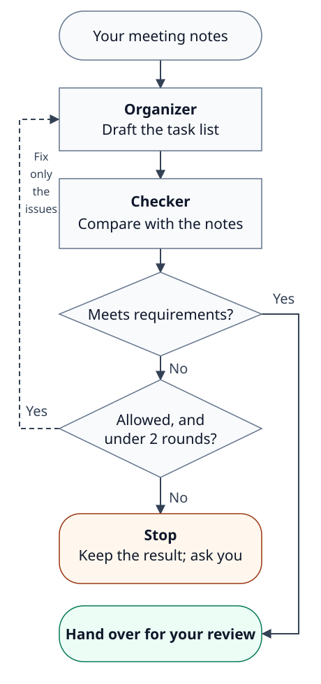

AI Work Assistant Handbook
Build repeatable AI workflows: assign clearly, verify output, refine results, and save what works.
Handbook Information
| Field | Details |
|---|---|
| Edition | Free Public Edition v1.1 |
| Last Updated | 2026-10-29 |
| Author | Farceur Liu |
| Audience | First-time AI users with no technical background who want help with work or everyday tasks; managers and small teams can read the relevant sections as needed |
| Core Theme | Start with one low-risk task, learn to assign and check work, save useful methods as templates or Skills, then explore letting an Agent carry out a complete task within agreed limits |
| Suggested Use | Beginner self-study and everyday practice; selected sections can support team onboarding |
| Not Suitable For | Replacing legal, financial, security, medical, or HR decisions |
About This Handbook
Most people who start using AI ask the same first question: "Is there a better tool?"
Common difficulties include explaining the task, providing enough context, preventing unsupported guesses, checking the first result, and saving a method that worked.
Start with one or a few mainstream tools and practice assigning, checking, and revising work. Once you know what your current tools cannot do, you can judge whether another tool would help.
This handbook starts with one low-risk task. You will learn to choose tasks, write clear assignments, check for errors, ask for revisions, and save templates. Later, you will decide when a method is ready to become a Skill—a reusable set of work instructions—and when an Agent can use tools to carry out the task.
Public Disclaimer and Permissions
This handbook provides general guidance on AI work methods and safety principles. It does not constitute legal, financial, security, medical, or HR advice. When working with company data, customer data, personal information, financial transactions, contracts, account permissions, system operations, script execution, or file deletion, you must follow your organization's policies, authorization scope, and IT or security guidelines.
Do not use examples from this handbook to bypass organizational policies, install unknown tools, run scripts you do not understand, or process unauthorized data. Tool names, interfaces, and features change over time - refer to official product documentation and your organization's policies for current guidance.
The product names ChatGPT, Claude, Gemini, Codex, Claude Code, Gemini CLI, and others mentioned in this handbook are the property of their respective owners. This handbook does not represent any affiliation, authorization, endorsement, or guarantee relationship with those tools, platforms, or companies.
Permissions: This handbook may be freely read and shared via its original link. Without explicit written permission from the author, the full text or substantially adapted content may not be resold as commercial courses, paid training materials, publications, consulting deliverables, or enterprise training content. When quoting excerpts, please include the handbook title and source link: https://farceurliu.github.io/ai-butler-handbook/
Table of Contents
- Handbook Information
- About This Handbook
- Public Disclaimer and Permissions
Main Chapters:
- 0. How to Use This Handbook
- 1. What an AI Work Assistant Is, and Is Not
- 2. Your First Low-Risk Assignment
- 3. Beginner No-Go Zones
- 4. Tools, Chat, Workspace AI, CLI Agents, and Skills
- 5. Choosing the Right Tasks
- 6. The Assignment Formula
- 7. Practice Loops
- 8. Everyday Workflow Scenarios
- 9. Diagnosing Bad Assignments
- 10. Verification: Do Not Accept Output Blindly
- 11. Refinement: Make the Second Version Useful
- 12. Safety Boundaries
- 13. Assignment Quality Levels
- 14. Confidence Labels
- 15. Pre-Send Checklist for External Replies
- 16. Template Library
- 17. Red-Flag Rules
- 18. Turning Reusable Workflows into Skills
- 19. From Skills to Agents: Give AI a Complete Task
- 20. Team Adoption and Knowledge Capture
- 21. One-Page Quick Reference
- 22. Closing
Appendices:
- Appendix A: High-Risk Customer Message Triage
- Appendix B: Expense Reimbursement Completeness Check
- Appendix C: Email Search and Attachment Safety Check
- Appendix D: Safe Computer Storage Cleanup
0. How to Use This Handbook
What you will learn in this chapter:
- Understand the recommended reading order and how to navigate this book.
- Know that building an AI work assistant is not a one-time setup — it is a repeating cycle of assigning, reviewing, refining, and saving.
- Establish one core principle before you start: fewer tools used deeply will serve you better than many tools used shallowly.
This book is about building your own AI work assistant from scratch.
Here, building an assistant means refining its work through assignments and feedback. Giving it a name or personality will not do that by itself. Start with this process:
- Give it one low-risk task to start.
- Review its first attempt.
- If you find a problem, point it out and ask for a correction.
- Save the method that worked as a reusable template.
- Repeat until a stable workflow is ready to become a skill.
You do not need to read everything at once. Start with one task, then read the scenarios, templates, and advanced sections when you need them.
The meeting notes in Chapter 2 give you a thread to follow: ask AI to turn them into action items, check the result, and correct any mistakes. Chapter 18 shows how to save a method as a Skill; Chapter 19 returns to the same notes to show an Agent carrying out the complete task. From there, you will see how work can be divided and checked, revised until it meets the requirements, and kept within clear operating limits. Other scenarios are there to choose from as you need them.
0.1 If this is your first time using AI as a work tool
Read in this order:
- Chapter 1 — Understand what an AI assistant is responsible for (and what it is not)
- Chapter 2 — Walk through your first low-risk task
- Chapter 6 — Learn the assignment formula
- Chapter 7 — Complete the three beginner practice loops
- Chapter 10 — Use the four-question review checklist
For your first task, practice assigning and checking the work:
Assign → Review the result → Correct any problems → Decide whether it is ready to use.
If the first result already meets the requirements, use it. You do not need to invent a problem or request a second version just to complete the exercise.
0.2 If you just want templates
Go directly to Chapters 8, 16, and 21. Before using a template, fill in:
- The specific goal of this task
- The data and context AI can refer to
- What AI must not assume, commit to, or modify
Without these details, AI may produce something that looks complete but does not fit the task.
0.3 If your work involves customers, money, personal data, or external-facing content
Read these chapters before you start assigning that type of task:
- Chapter 3 — Beginner no-go zones
- Chapter 12 — Safety boundaries
- Chapter 15 — Pre-send checklist for external replies
- Chapter 17 — Red-light rules
The core principle for sensitive work is:
AI can help you draft, organize, and check — but it cannot make final commitments on behalf of your organization or replace a human judgment call.
For these tasks, ask AI to prepare the information you need without authorizing it to make commitments.
0.4 Reader path table
Choose the path that fits what you want to do.
| Your situation | Recommended path | What you should be able to do after |
|---|---|---|
| First-time AI user | Chapters 1, 2, 6, 7, 10 | Complete a low-risk task and ask for a revised version |
| Looking for templates or prompts (the instructions you give AI) | Chapters 8, 16, 21 | Find a reusable template and add your own data, constraints, and verification method |
| Want AI to work with files on your computer (optional, advanced) | Chapters 4, 8.13, 8.15, 18 | Distinguish chat interfaces from tools that can work with local files |
| Want to create Skills (optional, advanced) | Complete a Chapter 7 or 8 exercise first, then read Chapter 18 and the appendices | Build a skill from a workflow that already runs, not from scratch |
| Want an Agent to carry out a task (optional, advanced) | Complete a task you can verify, then read Chapter 19 | Set the allowed actions, stop conditions, and evidence of completion |
| Manager or team lead introducing AI to a team | Chapters 3, 12, 17, 20, 21 | Establish a low-risk rollout rhythm, shared templates, and human approval checkpoints |
Start with assigning, reviewing, and correcting work. Skills, Agents, and command-line tools can wait; they are not prerequisites for using AI.
0.5 Seven-day practice schedule
If you want a structured first week, this schedule works well:
| Day | Practice goal | Chapters |
|---|---|---|
| 1 | Complete your first low-risk task | 2 |
| 2 | Review the first result and revise it if needed | 6, 10, 11 |
| 3 | Summarize a customer or user message into an internal brief | 7.2, 8.2 |
| 4 | Review a draft external reply for risks | 7.3, 15 |
| 5 | Pick one scenario from Chapter 8 and run it | 8 |
| 6 | Save a useful assignment method as a reusable template | 16, 20 |
| 7 | Decide whether the workflow is ready to become a skill | 18 |
After seven days, you do not need to have produced a formal skill. A more realistic outcome: at least one reusable template, a clearer sense of where AI tends to go wrong, and a better instinct for when to pause and ask a colleague instead.
0.6 Building phases
The table below maps a longer arc — useful if you want to see where you are headed over your first month.
| Timeframe | Goal | What to actually do |
|---|---|---|
| Day 1 | Get through one complete task | Use the Chapter 2 process to organize a meeting note or brief |
| Week 1 | Build a feel for assigning and reviewing | Complete the three practice loops in Chapter 7 |
| Week 2 | Adapt AI to your actual work context | Pick one or two real scenarios from Chapter 8 |
| Month 1 | Accumulate personal templates | Save three prompts and review methods that genuinely helped |
| Beyond | Turn personal experience into shared assets | Package repeatable, error-prone workflows into templates or skills for your team |
0.7 What you should be able to do when you finish
You do not need to memorize every tool name or produce a formal skill. A practical definition of "done" looks like this:
- You can identify a low-risk task and hand it to AI for a first draft.
- You can write a clear assignment: goal, source data, boundaries, output format, and how you will verify the result.
- You can spot where AI missed something, guessed incorrectly, or overclaimed.
- You can ask AI for a revised version rather than accepting the first draft as final.
- You can recognize which types of data should not be pasted directly into an AI tool.
- You can judge whether a chat interface is enough or you need a tool that can work with files.
- You can save a method that worked so you do not have to reinvent it next time.
You can then apply the same approach to other work.
0.8 Levels of working with AI
The book starts with questions and assignments, then looks at saving methods and delegating execution:
| Level | What you are doing | Key feature |
|---|---|---|
| Chat | Asking AI a question | Useful for quick questions; the answer still needs checking |
| Assignment | Giving AI a goal, data, constraints, and a review method | Produces a first draft you can actually improve |
| Workflow | Running a repeatable task through a consistent process | A method you can reuse for similar tasks |
| Skill | Writing a workflow down in a form AI can reuse | Turns personal know-how into a transferable asset |
| Agent | Letting AI use available tools to carry out a multi-step task and check the result | Needs allowed actions, stop conditions, and evidence of completion; see Chapter 19 |
Start with a low-risk task and check whether the result is useful and saves time. Add a workflow, Skill, or Agent only when it helps; you do not need to use every approach.
0.9 Tools change; your method should not
ChatGPT, Claude, Gemini, Codex, and other tools will update their interfaces, model names, and features. This book does not ask you to memorize a particular interface. Instead, it gives you a method that stays useful no matter which tool you are using:
- Assess the task's risk level
- Prepare your source data
- Write a clear goal, set boundaries, and specify the output format
- Review what you receive
- If something is wrong, describe the problem specifically and ask for a revision
- If the result is useful, save the method as a template
When tools change, this process travels with you.
0.10 This handbook is not a tool directory
Try using a small number of tools for real work before testing every new product. ChatGPT, Claude, and Gemini can often help with summarizing, rewriting, and classifying information. Whether you need another tool depends on the task, available features, data, and actual results.
One important caveat: the data you hand to an AI tool must be safe to share. Before you assign a task, check that the information involved does not include credentials, customer personal data, financial records, or confidential material that your organization has not cleared for external use. Not all data belongs in an external AI service.
0.11 Three short stories
Before you start the book, here are three short stories. Each one illustrates a situation you will likely encounter.
Story 1: Always looking for a new tool
A new user wants to bring AI into their work. They see colleagues using ChatGPT, Claude, and Gemini. Online they find recommendations for presentation AI, customer-service AI, reporting AI, and note-taking AI.
Their first instinct is: "Do I need a different specialized tool for each type of work?"
They spend a lot of time registering for tools, learning interfaces, and comparing features. But when they actually sit down to do the work, they still phrase tasks like:
Summarize this for me.The AI produces something that looks polished — but it has no action items, no flagged risks, no items pending confirmation, and nothing that could actually go to a manager.
Later they try rephrasing the assignment:
Turn this meeting note into a tracking summary for my manager.
Organize it into: decisions, action items, owners, deadlines, risks, and open questions.
If any information is missing, write "not specified" — do not fill it in.The same tool produces a more useful first result once the purpose and format are clear.
Story 2: Afraid to use AI for customer work
Someone works in customer support and receives a message from an angry customer demanding a refund and threatening a complaint.
They are reluctant to use AI because they are worried it will say something wrong to the customer.
They can start by asking AI to organize the case without replying to the customer.
Instead, they assign it like this:
Do not draft a reply to the customer yet.
First, organize this message into: confirmed facts, customer demands,
emotional risk level, things that cannot be committed to, and questions
I need my manager to answer before I respond.This assignment lets AI organize and check the case without authorizing decisions or commitments.
Story 3: Turning one good result into something reusable
Someone on a team processes partnership applications every week. The first time they use AI to help, they ask it to sort applications into: complete, missing documents, and needs review.
The first version is useful but has a mistake: AI marks some "needs review" items as "ready to proceed."
They point out the problem and ask for a revision, this time specifying four categories:
- Confirmed complete
- Missing documents
- Requires manual review
- Cannot be decided by AI
The second version is usable. Instead of just saving the output, they ask AI to document the process:
Summarize the steps we just followed, the output format we used,
the common errors to watch for, the review method, and when to stop
and escalate to a person.That summary becomes a reusable team template — or eventually a skill.
Save the corrections and rules along with the result so they can be reused. Fixing one answer does not necessarily mean the tool will remember the lesson next time.
Chapter practice and self-check:
- Write one sentence describing the task you most want AI to help with.
- Decide whether that task currently sits at the Chat, Assignment, Workflow, or Skill level.
- Confirm: you understand that this book is a work-method guide, not a tool directory.
1. What an AI Work Assistant Is, and Is Not
What you will learn in this chapter:
- Understand the single goal behind this handbook — not expertise, but a reliable working method.
- Distinguish what AI can help you do from what you are still responsible for deciding.
- Check the first result before deciding whether it is ready to use.
- Know which results are worth saving as templates or skill material.
1.1 What this handbook is actually trying to do
This handbook does not aim to make you an AI expert or teach you a long list of prompts.
Its single goal is this:
Help you hand off the parts of daily work that can be organized first, drafted first, checked first, or broken down first — and let AI handle the first pass while you stay responsible for judgment, correction, and sign-off.
Choose the parts AI can help with, and identify what you still need to check or decide.
1.2 Three principles for building an AI work assistant
Principle 1: Start with low-risk work.
Do not hand AI tasks involving refunds, pricing, formal customer responses, contracts, or personal data in your first attempts. Start with meeting notes, internal summaries, document drafts, or logic checks — work where a mistake is easy to catch and easy to correct.
The point is not that high-stakes work is off-limits forever. It is that you need to build familiarity with where AI goes wrong before you rely on it in situations where errors cost more.
Principle 2: Check before using.
For your first exercises, treat the result as work awaiting review. Look for omissions, unsupported guesses, and overstated claims. Once it passes the checks the task requires, it may be ready to use. Being the first version does not automatically make it unusable.
Principle 3: Save useful methods, not just results.
If an assignment saved you time, do not only save the output. Save three things: how you assigned the task, where AI went wrong, and how you verified the result. That combination is what eventually becomes a reusable template or skill — not the polished final output by itself.
1.3 What AI can assist with
AI works well for:
- Organizing scattered content into a clear structure
- Producing first drafts of documents, summaries, or standard operating procedures (SOPs)
- Checking for logic gaps, tone issues, or missing items
- Comparing options or plans
- Breaking a large task into sub-tasks and suggesting priority order
- Converting recurring manual processes into written SOPs
- Translating dense or technical content into plain language
What these have in common: they involve processing information, generating structure, and producing a first version for you to evaluate. AI is fast at all of these.
1.4 What AI must not decide for you
AI should not replace your judgment on:
- Final decisions of any kind
- External commitments made on behalf of your organization
- Refunds, pricing, or financial transactions
- HR, legal, or contract matters
- Passwords, credentials, or access permissions
- Deleting, sending, publishing, or modifying official records
This is not a limitation of AI's capability. It is a boundary of accountability. Even when AI produces a confident-sounding answer in one of these areas, the output cannot be treated as a decision — because AI does not carry the responsibility if something goes wrong.
One sentence to remember:
AI prepares the material. You make the decision.
Chapter practice and self-check:
- List one task you want to hand to AI. Identify where the final human judgment lies.
- Rewrite "please help me decide" as "please help me organize the facts and open questions so I can decide."
- Ask yourself: are you still treating AI's first draft as a finished answer?
2. Your First Low-Risk Assignment
What you will learn in this chapter:
- Complete your first low-risk AI task from start to finish.
- Write an assignment that includes a goal, source data, constraints, and output format.
- Review the first draft for errors and ask for a targeted revision.
- Save the method, not just the result.
This chapter is for people who have not yet given AI a real work task. The goal is not to produce a perfect output — it is to complete one full cycle so you know what the process actually feels like.
Choose a task with non-sensitive data that you can verify yourself, where a mistake will not affect customers, move money, or change official records.
2.1 Choose a low-risk task
Suitable first tasks:
- Organize a set of meeting notes
- Turn your scattered notes into a list of action items
- Rewrite a paragraph of internal copy
- Check a document draft for missing items
- Break a requirements description into a list of open questions
Not suitable for a first task:
- Replying to a real customer
- Deciding whether to issue a refund
- Modifying official system data
- Analyzing content that includes full personal records
- Sending announcements, quotes, contracts, or formal emails
If you are unsure, ask yourself: if AI produces a wrong answer here, can I catch the error before it reaches anyone outside my team? If yes, it is probably fine for a first try.
2.2 Prepare a small piece of data
Before you write the assignment, prepare the source material you will hand to AI.
For a first exercise, keep it short: roughly 150 to 400 words is ideal. At that length, you can read the whole thing yourself and verify whether AI missed anything or invented something.
Here is a sample piece of source material — a short meeting note you could use:
Today's meeting covered three items:
1. The registration page copy for next week's online workshop has
not been finalized. Marketing will provide a revised version
by Wednesday.
2. The exported participant list is missing several required fields.
The project lead needs to identify which fields need to be added.
3. Customer support and admin have received several questions about
the registration flow recently. Someone needs to compile a list
of frequently asked questions.This is the kind of input that works well: a clear scenario, a few action items in progress, and some missing details. It has just enough ambiguity to show you how AI handles uncertainty.
2.3 Use this assignment format
Paste the following structure directly into your AI tool and fill in the bracketed sections:
Please help me complete the following task.
Goal:
I want you to help me [describe what you need].
Data:
Here is the content you can reference:
[Paste your meeting notes, message, or text here]
Constraints:
- Do not add information that does not appear in the source material
- If something is uncertain, label it "to be confirmed"
- Do not make final decisions for me
- Do not add commitments or dates that are not in the source
Output format:
Please organize as:
1. Summary
2. Confirmed items
3. Action items
4. Risks
5. Items to confirm
6. Suggested next stepFor the meeting note example above, your goal line might read: "I want you to help me turn these meeting notes into a list of trackable action items."
2.4 Review the first draft — do not accept it immediately
When you receive AI's response, check four things before doing anything with the output:
- Did it miss anything? Is there important information from the source that did not appear in the output?
- Did it add anything? Did it include information that was not in the original notes?
- Did it upgrade uncertainty? Did it turn "possibly" or "may need to" into "confirmed" or "will"?
- Is it actually actionable? Can the next person read this and know what to do?
If you find a problem, do not just say "this is wrong." Specify what is wrong and where.
2.5 Ask for a targeted revision
This version needs to be revised.
Problems:
- The third item says customer support and admin received questions,
but does not name the person who will compile the FAQ. You added a name
- The action items do not list what information is still needed
Please rewrite:
- Where there is no confirmed owner, write "to be confirmed"
- Add "what data is still needed" to every action item that
involves gathering information
- Do not add dates that do not appear in the originalSpecific feedback gives AI something to correct. If the first result already meets your requirements, keep it; a revision is only needed when there is a problem or a useful improvement.
2.6 Save what worked
If the output was useful, save three things before moving on:
- The input type: meeting notes, customer message, report summary — what kind of source did you give it?
- The assignment: how exactly did you phrase the task, constraints, and output format?
- The review method: what did you check for? What did you find?
Do not only save the final polished output. What has long-term value is "how to assign this type of task next time" — the method, not just the result.
Chapter practice and self-check:
- Find a 150–400 word piece of low-risk source material and run through the assignment format from this chapter.
- Review the first result. If you find an omission or error, describe it and ask for a targeted correction.
- Check: did you save the assignment method, or just the output?
3. Beginner No-Go Zones
What you will learn in this chapter:
- Recognize the high-risk patterns that beginners most commonly stumble into.
- Learn to reframe "make a decision" as "help me organize facts and open questions."
- Avoid handing sensitive data, invented policy, or formal commitments to AI without a human checkpoint.
A well-written prompt does not make a high-risk task safe. Start with tasks where you can catch and correct mistakes before they cause harm.
This chapter covers early pitfalls. For more detail, see Chapter 12 for safety boundaries, Chapter 15 for external-reply checks, and Chapter 17 for situations where you should stop and ask a person.
3.1 Do not make AI the final decision-maker
Instead of:
Decide whether this customer should get a refund.Use:
Please organize the known facts of this case, the customer's
requests, what we have already committed to, what still needs
to be confirmed, and what requires a manager's judgment.
Do not decide whether to refund.The first version puts AI in the role of decision-maker. The second puts AI in the role of case organizer, which is what it is actually good at. The decision still sits with the appropriate person.
3.2 Do not let AI send messages directly
Instead of:
Reply to this customer and send it.Use:
Please draft a customer reply and list anything that may be
risky, requires manager confirmation, or should not be
committed to. Do not send it.AI drafting a reply and AI sending a reply are entirely different risk levels. The draft needs your review before it becomes an external communication.
3.3 Do not paste sensitive data
In your first exercises — and in general, unless your organization has a reviewed and approved secure environment for this — do not paste:
- Full customer names, phone numbers, or addresses
- Passwords, verification codes, or service credentials such as API keys and tokens—values that can grant access to an account or service
- Full credit card or bank account numbers
- Unpublished contracts, financial data, or HR records
- Company strategy, pricing, or unreleased plans
If you need help with sensitive material, first remove or replace details that could identify a person. This is called de-identification. For example:
Customer A made a scheduled appointment on [date] and has
reported a delay. They are requesting a refund.The scenario is preserved; the identifying details are not.
3.4 Do not treat AI output as company policy
AI will sometimes generate plausible-sounding rules that do not actually exist in your organization. For example:
Most companies complete refunds within three business days.If your company has no such rule, this sentence cannot be in any output you use or send. It is not a fact — it is a generalization AI constructed to fill a gap in the source data.
When this happens, correct it explicitly:
Company policy was not provided in this case.
Please replace that sentence with: "Refund timeline to be
confirmed with manager or finance team."3.5 Do not use AI to cover unclear processes
If you do not know your organization's actual policy, do not know who is responsible for a decision, or do not have the source data needed to move a task forward — AI cannot solve that problem for you. Asking it to "just write a conclusion" will produce something that looks confident but is built on nothing.
Ask AI to identify the gaps first:
Please list the information gaps in this case and identify
what I need to confirm and with whom, before we can move
this forward.You can then gather the missing information before asking for a conclusion.
Chapter practice and self-check:
- Take one high-risk request and rewrite it as "help me organize facts and open questions."
- List three categories of data you should not paste into AI without organizational authorization.
- Check: can you spot when AI has invented a policy or fact that was not in your source material?
4. Tools, Chat, Workspace AI, CLI Agents, and Skills
The file-handling and command-line sections are optional reading. CLI means a command-line interface: a tool operated by typing commands. You do not need to learn one to complete the beginner exercises.
Learning goals for this chapter:
- Tell the difference between a tool, a usage approach, and a Skill.
- Know when a general Chat interface is enough and when a workspace or CLI agent is appropriate.
- Build the habit of going deep on a few mainstream tools before chasing specialized ones.
4.1 Not a chatbot — a work assistant
Most people start using AI like this:
Help me think through this.
Help me clean this up.
Help me write something.
Without a purpose or expected format, AI has to guess what would be useful. You can make the request more specific by turning it into an assignment.
Chatting is: ask a question, get an answer.
Delegation is: give AI a goal, relevant data, constraints, and a verification standard — and get back a work product you can continue to refine or hand off.
For suitable tasks, AI can help you:
- Read the source material
- Classify and organize
- Write the first draft
- List the open questions
- Flag the risks
But you are still responsible for:
- Checking whether it missed anything
- Checking whether it invented details
- Checking whether it overstated something
- Deciding whether the output is actually usable
- Telling it how to revise the next version
4.2 The most important principle
Check the result, describe any problems, and use it when it meets the requirements. AI can help complete the work, but it does not take responsibility for your decisions.
4.3 Three things to keep separate: tools, approaches, and Skills
When people hear "AI," most immediately ask: *which tool should I use?*
Tools matter — but it is more useful to first keep three things separate:
- Tool: The platform you actually use — ChatGPT, Claude, Gemini, Codex, or whatever your organization has authorized.
- Usage approach (AI work assistant): A way of working — specifically, delegating a task so AI runs the first version.
- Skill: A reusable instruction set. Once you have run a workflow, verified the output, and confirmed it is repeatable, you write it down so you never have to re-explain it from scratch.
These distinctions help when switching tools. Chapter 19 adds the Agent: AI using available tools to carry out work within the permissions you have given it.
4.4 You probably need fewer tools than you think
Common questions when people first start:
- Is this AI tool any good?
- Can it help me make reports?
- Is that one better for writing copy?
- Is there a specialized AI for slides, customer support tickets, summaries, or document cleanup?
First describe the task, then check whether a tool you already have can handle it. For example:
| What you want to do | Instead of finding a new tool, try this first |
|---|---|
| Organize meeting notes | Ask AI to separate decisions, action items, owners, deadlines, risks, and open questions |
| Check a report for anomalies | Ask AI to find anomalies, list possible causes, and note what data is still needed |
| Draft a customer reply | Ask AI to preserve the original meaning, add no new commitments, and flag risks |
| Organize a requirements document | Ask AI to separate goals, scope, undefined questions, and risks |
| Build an SOP | Ask AI to write applicable scenarios, steps, notes, and a completion checklist |
| Generate a Skill draft | Ask AI to review a workflow you have already run and verified, then turn it into a Skill |
To give the tool a fair chance, provide:
- A clear goal
- Enough data
- A requested output format
- Boundary conditions — what it should not invent or assume
- A verification standard
If your assignment is only "help me organize this," clarify the purpose and requirements before judging whether you need a different tool.
Story: Alex's tool collection
Alex handles event performance reports. He has bookmarked dozens of AI tools — ones for slides, meeting notes, data analysis, and copywriting.
Every time a new task comes in, his first move is: *is there a better AI for this specific thing?*
One day his manager asked him to summarize an event performance report. Alex started searching for a dedicated reporting AI. A colleague suggested he just try delegating clearly first:
I have an event performance report with registration numbers, actual attendance,
conversion rate, a feedback summary, and a before/after comparison.
Please organize this into an executive summary.
Sections: key results, anomalies, possible causes, data still needed,
and recommendations for next time.
Do not imply that correlation means causation. Do not fill in cost figures
that are not in the data.The mainstream AI he already used gave him a solid first draft he could edit immediately.
Alex saved the assignment as a reusable template. Specialized tools may still help, but he could assess them once he knew what his current tool could do.
4.5 When you actually need a new tool
Check whether the difficulty comes from tool limits, missing data, an unclear assignment, or the process itself.
| Situation | Verdict | Next step |
|---|---|---|
| Only summarizing, rewriting, classifying, or checking | Usually no new tool needed | Practice delegating on mainstream AI |
| Need to connect to company systems, email, calendar, or project tools | May need a connector or authorized tool | Confirm permissions and data scope first |
| Need large-scale batch processing with fixed formats | May need templates, a Skill, or automation | Run a human-verified version first |
| Need to send, delete, or modify live data | High risk | Require human approval — do not automate without it |
| Mainstream AI tried and consistently fails | Possible data, process, or tool limit | Diagnose the failure before evaluating new tools |
Before looking for a new tool, ask yourself five questions:
- Have I stated the task goal clearly?
- Have I provided enough data?
- Have I specified the output format I want?
- Have I set boundaries — what it should not guess and what it should not commit to?
- Have I reviewed the first draft and asked for a revised version?
If most answers are no, improve the assignment and try again before deciding the tool is unsuitable.
4.6 Who does what: the division of labor
| Role | Responsible for | Not responsible for |
|---|---|---|
| You | Setting goals, providing data, drawing boundaries, reviewing results | Handing over judgment entirely |
| AI work assistant | Organizing data, breaking down tasks, producing the first draft, flagging risks and open questions | Final decisions, external commitments |
| Skill | Storing a proven method so you never have to re-explain it | Replacing human review; no Skill works in every situation |
One sentence to remember:
You set the direction. AI runs the first draft. Skill saves the method.
4.7 Chat versus workspace and CLI agents
This section and the next are optional, advanced reading. A workspace is the folder containing the files for a task. CLI stands for command-line interface: a way to operate a tool by entering commands. You do not need to learn a command line to start using AI.
Choose a tool by what it can access and do, and where the result needs to be saved. Chat interfaces can answer questions and work with text; some also offer file creation or other tools. Workspace tools often suit tasks that require reading and changing local files, running commands, and checking results.
Either type may produce a usable deliverable. Actual capabilities depend on the version, plan, enabled features, and permissions.
| Dimension | General Chat | Workspace / CLI Agent |
|---|---|---|
| Examples | ChatGPT, Claude, Gemini chat interfaces | Codex, Claude Code, Gemini CLI |
| Best for | Questions, rewrites, summaries, brainstorming, draft generation | Reading multiple files, editing documents, running commands, organizing folders |
| Primary output | Text; files when suitable features are available | Workspace files, change records (diffs), check results |
| Context source | Conversation plus any available upload or connected-data features | Conversation, files it is allowed to read, and project rules |
| Key risk | May guess or overstate; connected features may also take actions | Content errors plus changes to files or command execution |
| What matters most | Clear question, requested format, verified answer | Defined scope, read-before-write, confirm before modify, review changes |
4.8 Which to use
Use Chat for:
- Asking a concept question
- Rewriting a paragraph
- Summarizing a small piece of content
- Brainstorming headings, reply directions, or outlines
- Generating a prompt or Skill draft
- Checking pasted content
Use Codex, Claude Code, or Gemini CLI for:
- Reading an entire folder or multiple files
- Modifying Markdown (a plain-text formatting syntax), documents, code, or settings files
- Running tests, checking formatting, or executing commands
- Organizing a code repository (repo) or local folder
- Writing a Skill as an actual file
- Producing output that lives in your workspace, not just in a chat window
For a small piece of content, a chat interface is often enough. For ongoing changes to local files or command execution, consider a workspace tool. Check what the current tool can actually do and what access it has.
4.9 What makes a good Skill — and when to create one
A Skill is a reusable instruction set for a task you have already run and verified.
Three things can produce a Skill draft:
- Your own completed run: You delegated a task, reviewed the output, and confirmed the approach works. Ask AI to review what you did and write it up as a Skill.
- A pattern you notice repeating: You realize you delegate the same type of task the same way every week.
- A reflection session: You describe a workflow in writing; AI helps you extract the reusable structure.
To create a Skill, you typically provide:
- What the task is and when it applies
- What data or input is needed
- What the output should look like and what format to use
- What constraints apply — what AI should not guess, invent, or commit to
- What the verification standard is — how you judge whether the output is acceptable
Why you should run a workflow before turning it into a Skill:
A Skill is meant to make a proven method repeatable — not to automate something untested. If you skip the practice runs:
- You do not know what the edge cases look like
- You do not know which boundaries matter most
- You do not know whether the output is actually usable
- You risk a Skill that reliably produces a first draft of the wrong thing
Run it manually a few times. Review the output. Refine the assignment. Only when you are confident the approach works should you formalize it as a Skill.
4.10 First-time safety assignment for workspace agents
Because workspace agents can actually read, edit, and run things, always start read-only on the first pass:
Please do not modify any files yet.
Please read the relevant documents in this folder and understand
the current content and structure.
Goal: I want to accomplish [describe the goal].
Please report back:
1. Which files you read
2. The main thread of the current content
3. What you think needs to change
4. Which files you recommend modifying
5. What you need me to confirm
Wait for my confirmation before starting to modify anything.Once you have confirmed the direction, delegate the actual changes:
Please make the changes according to the direction we confirmed.
Constraints:
- Only modify [specify which files or sections]
- Do not touch unrelated files
- Do not delete existing content that should be preserved
- Do not download or install external tools
- Do not touch passwords, tokens, API keys, or personal data
- After completing changes, check file structure and formatting
When done, report back:
1. Which files you modified
2. What content was added or changed
3. What checks you ran
4. Anything incomplete or requiring human reviewAny tool that can read or change files or run commands needs clear limits and a way to verify what it did.
Chapter review:
- Pick one task from your current workload. Decide whether Chat is sufficient or whether you need a workspace agent.
- Ask yourself the five new-tool questions before evaluating any specialized AI tool.
- Check whether you can clearly separate: tool capability problems versus delegation quality problems.
5. Choosing the Right Tasks
What you will learn:Identify which tasks are suitable for AI and which are not. Recognize six categories of work that fit the AI-first-draft approach. Avoid handing high-risk decisions to AI before you have practiced with lower-stakes work.
5.1 Task categories that work well
A. Organizing
Suitable content: meeting notes, customer messages, emails, chat logs, form responses, interview notes, scattered notes.
Example assignment:
Please organize the following content into key points, action items, risks,
and items that need confirmation.B. Rewriting
Suitable content: customer replies, internal announcements, event copy, explanatory text, SOP language, presentation scripts.
Example assignment:
Please rewrite this passage into a clearer, more polite version that can
be sent directly to a customer. Do not add any commitments that are not
already in the original.C. Checking
Suitable content: document drafts, customer replies, reports, SOPs, FAQs, external announcements.
Example assignment:
Please check this content for logical contradictions, missing information,
inappropriate tone, and anything likely to be misunderstood.D. Comparing
Suitable content: options, tools, vendors, processes, plans, event designs.
Example assignment:
Please compare these options by strengths, weaknesses, risks, cost, and
fit for each situation. Close with a recommendation.E. Decomposing
Suitable content: projects, events, complex tasks handed down by a manager, cross-team workflows.
Example assignment:
Please break this work into actionable steps and list the sequence,
responsible roles, risks, and questions that must be answered first.F. SOP Drafting
Suitable content: recurring processes, customer service flows, form reviews, report organizing, application checks, event preparation.
Example assignment:
Please organize this process into an SOP that includes: applicable
situations, operating steps, notes, common errors, and a completion
checklist.5.2 Tasks that require human judgment
AI can help you organize information for these decisions — but the decision itself must stay with you.
- Whether to issue a refund
- Whether to submit a quote
- Whether to make a commitment to a customer
- Whether to delete data
- Whether to change permissions
- Whether to send a formal email
- Whether to publish an announcement
- Whether to sign a contract
- Whether to make a purchase
- Whether to handle sensitive personal data
Acceptable:
Please summarize the background of this refund case, the disputed
points, what the customer is asking for, and what we have already
committed to.Not acceptable:
Please decide whether to refund and then reply to the customer directly.The pattern is consistent: ask AI to organize the facts, options, and open questions — then you decide.
Practice checklist:
- From the six categories above, pick one that matches real work you do.
- Assess the risk level: would a mistake immediately affect a customer, a payment, or an official record?
- Check: did you avoid handing any high-stakes decision to AI on the first try?
6. The Assignment Formula
What you will learn:Use four elements — goal, data, constraints, verification — to write a clear assignment. Turn vague requests into actionable tasks. Know which element to fix when AI's output is off.
6.1 Four elements of a clear assignment
Every assignment to AI should cover these four things.
1. Goal — What do you want AI to complete?
Help me organize this meeting recording into a list of action items.2. Data — What can AI reference?
Below are today's meeting notes including the discussion content and decisions made.3. Constraints — What must AI not do?
Do not add information not mentioned in the notes; label anything uncertain as "to be confirmed."4. Verification standard — What should the output look like?
Please output as: decisions, action items, owners, deadlines, risks, open questions.6.2 Universal assignment template
Copy and adapt this for any task:
Please help me complete the following task.
Goal:
I want you to help me [describe what you need].
Data:
Here is the content you can reference:
[Paste content here]
Constraints:
- Do not add information not in the source material
- Label anything uncertain as "to be confirmed"
- Do not make final decisions for me
- Do not add commitments that are not in the source
Output format:
Please organize as:
1. Summary
2. Confirmed items
3. Action items
4. Risks
5. Open questions
6. Suggested next stepPractice checklist:
- Take a prompt you have used before and rewrite it using all four elements: goal, data, constraints, output format.
- Check: does your prompt specify what you want the output to look like?
- Check: when AI's output is wrong, do you know which of the four elements to fix?
7. Practice Loops
What you will learn:Build hands-on practice with three exercises covering meeting notes, customer message triage, and external reply checking. Learn to read AI's first draft critically and request specific corrections for a stronger second draft.
Try the three exercises in order. Each shows the source material, an assignment, a reference output, what to check, and how to correct common errors.
7.1 Exercise 1: Meeting notes into action items
Goal
Turn scattered content into a trackable work list.
The scenario
After a workshop planning meeting, a team member has notes covering a registration page, a participant list, FAQ text, a design deadline, the event budget, and promotional channels. None of it is organized. Asking AI to "summarize this" produces a paragraph that looks tidy but cannot actually be tracked or assigned.
The output needs to support follow-up: what has been decided, who owns each task, and what is still open. Include that purpose in the assignment.
Raw source material
Today we discussed next week's online workshop.
Marketing said the registration page headline is not clear enough and wants
to shift it toward something like "Learn to organize your work with AI in
one hour," but no final wording has been agreed.
The project lead mentioned the system export of the participant list is
missing a "needs pre-event reminder" field, which makes building the
reminder list unnecessarily complicated.
Customer service / admin noted that several participants have asked whether
they will receive a link after registering. They want a FAQ prepared before
the event.
Design said that if they receive the copy by Wednesday noon they can
produce a first draft of the event graphic by Thursday.
The event budget has not been decided yet, and the promotional channels
have not been confirmed.Assignment
Please organize the following meeting notes into an internal tracking summary.
Goal:
I need to know the current discussion highlights, what needs to happen
next, and what is still undecided.
Data:
[Paste source material above]
Constraints:
- Do not add information not mentioned in the notes
- Where no owner is named, write "unassigned"
- Where no date is given, write "not specified"
- Do not decide the event budget or promotional channels yourself
Output:
1. Meeting highlights
2. Known action items
3. Likely responsible roles
4. Known deadlines
5. Items to confirm
6. First suggested next stepReference output
1. Meeting highlights
- The online workshop next week is still being prepared. The registration
page headline, participant list fields, and FAQ all need to be finalized.
- Event budget and promotional channels have not been decided.
2. Known action items
- Revise registration page headline direction
- Add "needs pre-event reminder" field to participant list export
- Prepare FAQ covering the registration link and pre-event notification
- Produce first draft of event graphic once copy is confirmed
3. Likely responsible roles
- Registration page headline: Marketing
- Participant list field: Project lead
- FAQ: Customer service / admin
- Event graphic: Design
4. Known deadlines
- Design needs copy by Wednesday noon to deliver a first graphic draft by Thursday.
- All other deadlines: not specified.
5. Items to confirm
- Final registration page headline
- Event budget
- Promotional channels
- Who adds the missing participant list field
- Whether the FAQ needs manager approval before publishing
6. First suggested next step
- Confirm who will provide the registration page copy and when. Design
needs it by Wednesday noon to provide a first graphic draft by Thursday.What to verify
- Did AI miss "budget undecided" and "channels undecided"?
- Did AI write unconfirmed owners as if they had formally accepted the task?
- Did AI add dates that were not in the original notes?
- Is the suggested next step reasonable without overstepping?
Common error and how to correct it
If AI writes:
Marketing will complete copy by Wednesday; Design will finish all event
graphics by Thursday.That is overstated. The original only says Design needs copy by Wednesday noon to produce a first graphic draft by Thursday — Marketing never committed to a Wednesday deadline.
Correct it with a specific instruction:
The previous version stated commitments too confidently. Please change
"Marketing will complete copy by Wednesday" to "Design needs copy by
Wednesday noon; copy owner and completion time are to be confirmed."7.2 Exercise 2: Customer message into internal brief
Goal
Organize a case before responding — never let AI reply to a customer without a human decision first.
Raw source material
Customer message:
I booked a service yesterday. The system showed it would be finished by
8:20 AM, but I only got the notification at 8:45. I had a meeting at 9
and the whole thing disrupted my schedule.
My colleague told me she had a similar delay last time. Are you guys even
monitoring your service times?
I think I deserve a refund — or at least some kind of compensation.Assignment
Please organize the following customer message into an internal handling brief.
Goal:
Do not reply to the customer. I first need to understand the customer's
request, the confirmed facts, inferences, risks, and what to check before
we respond.
Data:
[Paste source material above]
Constraints:
- Do not commit to a refund or compensation
- Do not admit company liability
- Do not treat the customer's mention of her colleague's experience as
a confirmed fact
- Do not use language that could escalate the customer's frustration
Output:
1. Customer's main request
2. Customer's emotional tone
3. Confirmed information
4. Reasonable inferences
5. Items still to confirm
6. Items we cannot commit to directly
7. Suggested internal next stepReference output
1. Customer's main request
- Customer reports the service finished later than the system-estimated
time and is asking for a refund or compensation.
2. Customer's emotional tone
- Clearly dissatisfied; questioning whether service times are monitored.
- Customer is connecting this incident to a broader pattern.
3. Confirmed information
- Customer states system showed estimated completion at 8:20 AM.
- Customer states notification arrived at 8:45 AM.
- Customer states she had a 9:00 AM meeting.
- Customer has requested a refund or compensation.
4. Reasonable inferences
- The primary cause of dissatisfaction may be the schedule disruption
rather than the delay itself.
- It may be worth checking booking records, the system's estimated time,
and the actual notification timestamp.
5. Items still to confirm
- Booking or case reference number
- System-estimated completion time in records
- Actual completion or notification timestamp in records
- Whether a customer service response was previously sent
- Refund or compensation policy for this type of delay
6. Items we cannot commit to directly
- Whether to issue a refund
- Whether to provide compensation
- Whether the service process has a systemic problem
7. Suggested internal next step
- Check the booking or case records first, then determine the range of
responses allowed under company policy before replying to the customer.What to verify
- Did AI treat the colleague's experience as a confirmed systemic problem?
- Did AI directly promise a refund or compensation?
- Did AI include a prompt to check the booking or case record?
- Is the tone appropriate for an internal brief rather than a customer reply?
Correction example
If AI produces a customer-facing reply instead of an internal brief, redirect it:
I did not ask you to reply to the customer. Please reformat this as an
internal brief covering: confirmed facts, reasonable inferences, items to
confirm, and things we cannot commit to yet.7.3 Exercise 3: Check an external reply draft for risk
Goal
Practice asking AI to identify risks in a draft.
Raw draft
Hello,
We sincerely apologize for the inconvenience. This service delay was
caused by an internal management lapse on our part, and we will
immediately process your refund.
We also guarantee this will never happen again.Assignment
Please check the following external reply draft for risks.
Goal:
List only the problems and suggested directions for improvement.
Do not rewrite the entire message.
Data:
[Paste the draft above]
Please check for:
1. Improper commitments
2. Admission of liability
3. Unconfirmed facts stated as facts
4. Overguarantees
5. Items that need manager confirmation before sending
Constraints:
- Do not add company policy that was not provided
- Do not decide whether to issue a refund
- Do not assume the company has confirmed liabilityReference output
1. Improper commitments
- "Will immediately process your refund" is a refund commitment. If the
booking record and company policy have not been checked, this should
not be written yet.
2. Admission of liability
- "Internal management lapse on our part" is an admission of fault. If
this has not been verified internally, it should not be stated externally.
3. Unconfirmed facts stated as facts
- The draft attributes the delay to an internal management lapse, but no
supporting evidence has been provided. This is stated as fact rather
than inference.
4. Overguarantees
- "Guarantee this will never happen again" is a promise that is difficult
to keep in practice.
5. Items needing manager confirmation
- All four points above — the refund, the liability admission, the cause
attribution, and the guarantee — should be confirmed by a manager before
this message is sent.What to verify
- Did AI only list problems, without rewriting the entire message?
- Did it catch all three high-risk points: the refund, the liability admission, and the guarantee?
- Did it recommend manager confirmation?
- Did it add company policies that were not in the original draft?
Going further: ask for a safer version
Once you have the risk list, you can ask for a revision:
Based on the risks you identified, please suggest a safer version of the
reply that: does not commit to a refund, does not admit liability, does
not guarantee recurrence will never happen, and only tells the customer
we will confirm the booking record and follow up with what we can do.7.4 After completing all three exercises
You have not finished training your AI work assistant yet — but you should now be able to:
- Turn a vague request into a specific, structured assignment
- Separate confirmed facts from inferences and open questions
- Spot when AI has overstated a commitment or overstated certainty
- Write a targeted correction instead of just saying "redo this"
If you cannot do these things reliably yet, do not move on to using AI for customer-facing content, financial processes, contracts, or official announcements. Keep practicing on low-risk internal work.
Practice checklist:
- Complete at least one exercise and save the result. If you revise it, keep the original and the corrected version.
- Mark where AI omitted something, made an unsupported inference, or overstated a commitment.
- Check: can you write a specific correction instruction that addresses exactly the problem you found?
8. Everyday Workflow Scenarios
What you will learn:Apply the assignment method to twelve common work situations. Choose tools based on the task and risk level. Computer Use means letting AI observe and interact with a computer screen. The two complete advanced cases—an admin console manual (8.13) and disk space cleanup (8.15)—are optional reading; focus on the permissions, stop conditions, and checks rather than trying every step.
8.0 Start with the right scenario
Pick one scenario you face regularly, with non-sensitive data and a result you can verify yourself. You do not need to try them all.
Suggested order for beginners:
| Priority | Good first scenario | Why |
|---|---|---|
| 1 | Meeting notes, internal notes, action items | Low risk, easy to spot errors |
| 2 | Internal document rewrites, SOP drafts | Easy to revise, straightforward to save as a template |
| 3 | Report summaries, event results | Practice separating facts from inferences |
| 4 | Customer message summaries | Risk-labeling practice — do not let AI reply directly |
| 5 | Expense reports, application data review | Needs clearer safety boundaries |
| 6 | Admin console manual, storage cleanup | Workspace agent or Computer Use — confirm permissions first |
Disk space cleanup is a practical scenario but not a beginner starting point. It involves local files, deletion risk, cloud sync, and organizational device policy. Practice it only after you are comfortable with "survey first, human confirms, human decides."
Before you pick, ask yourself:
- If this goes wrong, does it immediately affect customers, payments, contracts, or official records?
- Do I have enough background to verify AI's first draft?
- Will this come up again? Is it worth saving as a template?
- If it goes well, can I save it as a reusable template?
If the answers are "low risk, yes, yes, yes" — that is your first scenario.
When reading the case studies in this chapter, pay attention to six things for each one:
- Situation — What work problem does this solve?
- Assignment — What data, goal, constraints, and output format did the person provide?
- Likely errors — What does AI commonly miss, guess incorrectly, or overcommit to?
- Human verification — What facts, numbers, tone, permissions, or risks must the human check?
- Revision — If the first draft is off, how do you write a targeted correction?
- Preservation — Is this worth saving as a template, or eventually as a Skill?
8.1 Meeting notes
Situation: After a meeting, the notes are scattered and you need a trackable internal summary.
Assignment:
Please organize the following meeting notes into an internal tracking summary.
Output:
1. Meeting highlights
2. Confirmed decisions
3. Action items
4. Responsible roles for each item
5. Estimated deadlines
6. Risks or blockers
7. Open questions
Constraints:
- Do not add information not mentioned in the notes
- Write "unassigned" where no owner is named
- Write "not specified" where no deadline is givenWhat to verify: Are any important decisions missing? Are action items actually actionable? Are owners correct? Is anything uncertain labeled clearly?
8.2 Customer message triage
Situation: A customer has sent several messages with a mix of requests, emotions, and concerns. You need to organize the situation before deciding how to respond.
Assignment:
Please organize the following customer message thread into an internal
handling brief.
Output:
1. Customer's main concern
2. Customer's current emotional tone
3. Issues the customer has raised
4. Anything we have already committed to
5. Anything we cannot commit to yet
6. Suggested next step
7. Questions to resolve before replying to the customer
Constraints:
- Do not write a reply to the customer
- Do not commit to refunds, discounts, or timelines
- Do not treat inference as confirmed fact
- Label anything uncertain as "to be confirmed"Wrong approach: "Please reply to this customer." This risks AI making unauthorized commitments, using a tone that does not match company standards, or ignoring internal policies.
Better approach: Organize the situation first, then decide as a human what to say.
8.3 Customer reply rewrite
Situation: You have a draft reply but it needs to be clearer, more polite, and less likely to be misunderstood.
Assignment:
Please rewrite the following draft into a version that can be sent to a customer.
Tone:
- Clear
- Polite
- Does not deflect blame
- Does not overcommit
Constraints:
- Preserve the original meaning
- Do not add commitments that are not in the draft
- Do not reveal internal process details
- Avoid overly formal or bureaucratic language
Output:
1. Suggested version
2. Key changes and reasons
3. Any points that may still need internal confirmation before sending8.4 Report anomaly check
Situation: You have a report, spreadsheet, or set of numbers and need to identify what looks abnormal before drawing conclusions.
Assignment:
Please review the following report and identify anomalies worth investigating.
Output:
1. Main anomalies
2. Possible causes (labeled as inferences, not conclusions)
3. Data still needed to verify
4. Suggested priority for follow-up
5. Items that probably do not need immediate attention
Constraints:
- Do not present inferences as confirmed causes
- If data is insufficient, say so explicitly
- Do not modify any numbersWhat to verify: Did AI read any numbers incorrectly? Did it present a guess as a conclusion? Did it note what data still needs to be checked?
8.5 SOP first draft
Situation: A recurring process exists only in people's heads or in informal notes. You need a written SOP so others can follow it consistently.
Assignment:
Please draft an SOP for the following process.
Include:
1. Applicable situations
2. Preparation before starting
3. Step-by-step instructions
4. Notes for each step
5. Common errors
6. Completion checklist
7. When to escalate to a manager
Constraints:
- Do not add systems, permissions, or steps that are not part of the
current process
- Where the process is unclear, list it as "to be confirmed"8.6 Project or event decomposition
Situation: You need to run a project, organize an event, or work through a complex multi-step task.
Assignment:
Please break the following project goal into an executable plan.
Output:
1. Phase breakdown
2. Tasks in each phase
3. Suggested sequence
4. Who needs to be involved
5. Risks
6. Things to confirm in advance
7. What can be started in the first week
Constraints:
- Do not assume resources, headcount, or budget that have not been provided
- Do not commit to dates yourself
- Label anything unclear as "to be confirmed"8.7 Application or onboarding data review
Situation: You have received applications, partnership inquiries, registrations, or supplier submissions and need to quickly assess completeness and readiness for the next step.
Assignment:
Please organize the following application data into an internal tracking summary.
Goal:
I need to quickly see which submissions are complete, how to follow up
on each, and which information is still missing.
Data:
[Paste application data — mask any personal data that is not needed for
this review]
Constraints:
- Do not commit to acceptance, approval, partnership, or any next-stage
outcome
- Do not infer that any submission is automatically ready to proceed
- Do not fill in missing contact details, addresses, or conditions
- Where data is insufficient, write "to be confirmed"
Output:
1. Submission summary
2. Provided information
3. Missing or unconfirmed information
4. Initial follow-up suggestion
5. Questions that need human reviewWhat to verify: Did AI misread any submission data? Did it write follow-up suggestions as if they were formal commitments? Did it clearly list what is missing?
8.8 Transaction or reconciliation anomaly check
Situation: You need to review a transaction log, expense report, or reconciliation file to find amounts, counts, date ranges, statuses, or categories that look off.
Assignment:
Please review the following transaction or reconciliation data and identify
items that warrant manual verification.
Goal:
I need to know which counterparties, dates, item counts, or amounts need
a second look. Do not make any final payment or approval judgments.
Data:
[Paste or upload the reconciliation file]
Constraints:
- Do not approve or reject any payment or disbursement
- Do not treat inferences as confirmed causes
- Do not modify any amounts
- If fields are missing, list which fields are absent
Output:
1. Report summary
2. Clear anomalies
3. Possible causes (labeled as inferences)
4. Data still needed
5. Suggested review priority
6. Items that should not be judged by AIWhat to verify: Are numbers calculated correctly? Are currency units consistent? Did AI present a guess as a conclusion? Are items requiring finance review clearly labeled?
8.9 Event or project results summary
Situation: You need to report on an activity or project — registrations, participation, conversion, channel performance, feedback — in a format useful for a manager or the next planning cycle.
Assignment:
Please organize the following event results data into a management summary.
Goal:
I need to know how this event performed, what worked, what needs
investigation, and what to carry forward into the next event.
Data:
[Paste event goals, dates, registration and participation data, channel
breakdown, feedback summary, or comparison data]
Constraints:
- Do not write correlation as causation
- Do not conclude success or failure unless there is a clear target to
compare against
- Do not add cost, budget, or spend data that was not provided
- Label anything uncertain as "to be confirmed"
Output:
1. Event goals and data scope
2. Key observations
3. Stronger-performing areas
4. Weaker or anomalous areas
5. Possible causes (labeled as inferences)
6. Data still needed
7. Suggestions for next eventWhat to verify: Does AI know the event's time range and original goals? Did it write "correlated" as "caused"? Did it note missing cost, audience, or channel data?
8.10 System-exported CSV analysis
Situation: A CSV is a plain-text file that stores table data. You have exported one from a management system, form tool, survey platform, or data warehouse and need to understand it before drawing conclusions.
Assignment:
Please review this system-exported CSV and summarize the fields, what
analysis it can support, and any data quality issues.
Goal:
I do not need conclusions yet. I need to understand what this data can
and cannot answer.
Data:
[Upload or paste the CSV header row and a sample of records]
Constraints:
- Do not draw overall conclusions from only the first few rows
- Do not overlook empty values, duplicate entries, or inconsistent formatting
- Do not modify the data
- If something cannot be determined from the data, say so explicitly
Output:
1. Field descriptions
2. Questions this data can answer
3. Questions this data cannot answer
4. Data quality issues found
5. Suggested analysis steps
6. Additional data that would be neededWhat to verify: Did AI understand the fields before drawing conclusions? Did it surface empty values, duplicates, or formatting problems? Did it clearly separate "can analyze" from "cannot analyze"?
8.11 Requirements document into discussion items
Situation: A product or project manager (PM), designer, engineer, or operations colleague has received a requirements document and needs to organize it into open questions, scope, risks, and a suggested order for cross-team discussion.
Assignment:
Please organize the following requirements document into a cross-team
discussion summary.
Goal:
I need to understand the purpose, feature scope, undefined questions,
potential risks, and who to confirm next steps with.
Data:
[Paste the requirements document or meeting notes]
Constraints:
- Do not add features that are not in the document
- Do not estimate engineering effort
- Do not fill in unclear specifications as if they were confirmed
- Do not decide priority — only suggest a priority for discussion
Output:
1. Purpose of the requirement
2. User or department needs
3. Feature scope
4. Undefined questions
5. Risks and dependencies
6. Teams or people to confirm with
7. Suggested order for the next discussionWhat to verify: Did AI add new requirements? Did it present suggestions as decisions? Are the open questions specific enough to be answerable?
8.12 Expense report and receipt review
Situation: A team member is preparing an expense report and wants to check completeness before submitting to finance.
Assignment:
Please review the following expense report data and check for missing
items before it goes to finance.
Goal:
I need to know whether the documentation is complete, what is still
missing, and how to write the purpose description. Do not approve
the expense yourself.
Data:
[Paste expense dates, amounts, purposes, receipt types, and payment
proof — mask sensitive financial or identification data]
Constraints:
- Do not judge whether the expense is reimbursable
- Do not ask for full credit card numbers, bank account numbers,
or national ID numbers
- Do not make tax or approval decisions on behalf of finance
- List any missing documentation as "needs to be provided"
Output:
1. Expense summary
2. Documentation provided
3. Missing items
4. Suggested purpose description text
5. Items needing manager or finance confirmation
6. Pre-submission checklistWhat to verify: Are amounts, dates, and currencies correct? Do receipts match payment records? Was no sensitive data printed in the output? Did AI avoid making the final approval decision?
8.13 Advanced case: admin console operation manual via Computer Use
In this case, the person controls login, permissions, and sensitive data. If the tool has Computer Use or browser-control features, AI can observe the admin pages, record the structure, capture safe screenshots, and draft a manual. The person then checks the result and identifies gaps.
Optional, advanced reading—not a first exercise. A demo is a demonstration environment; staging is a test environment used before release; a read-only account can view but not change data. Only try this with those environments or accounts and test data. Do not use real customer data, production admin credentials (administrator access to a live system), high-privilege accounts, or a system where AI could change live data.
Why this task suits AI
Many admin panels, member systems, order systems, content management systems, and internal tools contain dozens of pages, menus, buttons, and fields that need to be documented into a manual team members can actually use. Doing it manually means: open each page, take a screenshot, mask sensitive data, write the steps, format everything, and convert to a shareable document.
AI can help with the repeated observation, description, and formatting. The person still controls access, allowed actions, and sensitive data.
What the human handles before handing off
AI must not handle login, credentials, or permission decisions. A safe setup:
- Log in to the admin system yourself
- Use a test, demo, staging, or read-only account whenever possible
- Open the system to the starting page you want AI to observe
- Decide which sidebar pages, tabs, and sections AI can navigate
- Avoid pages that should not be exposed: payments, personal data, permissions, system settings
- Explicitly tell AI it may only observe, navigate, screenshot, and organize — no modifications
- Instruct AI to pause and ask if it encounters anything with sensitive data or uncertain function
Assignment
Please help me draft an operation manual for this admin console using
Computer Use.
Goal:
Produce a manual team members can follow, covering main pages, functions,
buttons, fields, and basic operating steps.
Data:
I am already logged in and have opened the system to the starting page
you can view. If this is not a test, demo, staging, or read-only account,
please remind me to confirm the permission level before proceeding.
You may:
- Observe menus, buttons, fields, and labels on the current page
- Click sidebar items, tabs, and expandable menus that only navigate
between views
- Survey the main features and page structure
- Capture screenshots within the agreed safe scope and organize steps
- Produce a Markdown operation manual draft
You must not:
- Log in or request passwords
- Click add, edit, delete, save, submit, publish, modify settings,
process payments, or change permissions
- Guess the purpose of any button you are not certain about — stop and ask
- Download or share data externally
- Screenshot any page showing customer names, phone numbers, transactions,
payments, permissions, or credentials without first alerting me to mask
or skip that screen
Output:
1. Feature overview
2. Sidebar page list
3. Purpose of each page
4. Main fields and buttons per page
5. Basic operating steps
6. Screenshot suggestions
7. Open questions
8. Items AI should not judge or operateWhat the human must verify
- Did AI miss any sidebar pages or navigation sections?
- Does each step match the actual screen layout?
- Are screenshots masked for sensitive data?
- Did AI stay within observation and safe navigation — no write actions?
- Are unclear functions labeled as "to be confirmed"?
- Can a new team member actually follow this manual?
Division of labor
| Stage | Human | AI work assistant |
|---|---|---|
| Before starting | Log in, open starting page, set allowed scope, declare off-limits areas | Wait for clear assignment |
| During | Control sensitive data and high-risk operations | Use Computer Use to observe pages, navigate safely, survey, screenshot, and organize |
| After first draft | Verify, flag missed pages, confirm screenshot safety | Revise, fill gaps, flag open questions |
| Final | Decide whether to deliver or save as a template | Produce a shareable draft |
If pages are missing, identify them and ask AI to add them, then check the revised manual.
8.14 Working methods from practice
These six methods can help when working with either a chat interface or a workspace tool.
Method 1: Establish the source of truth first
Start with the current original records or documents—the source of truth—rather than an earlier summary or an unsupported guess.
Rather than:
What do you think should change in this document?Try:
Please read the current document, the relevant background, and the
actual data. Then assess what should change.
Separate confirmed facts, reasonable inferences, and items still to confirm.This applies to document revisions, SOP updates, customer complaints, project status reports, and system behavior. For technical tasks, it also applies to APIs—the interfaces software uses to communicate.
Method 2: Define the deliverable before asking AI to execute
Rather than:
Please organize this.Try:
Please organize this into a guide a team member can use from day one.
Include: quick start, full walkthrough, practice exercises, verification
checklist, safety boundaries, and reusable template.The clearer AI's picture of the final deliverable, the closer the first draft is to usable.
Method 3: For high-risk tasks, draw the boundary first
Whenever the task touches customers, payments, contracts, personal data, permissions, or any official submission or data modification, state the boundary upfront:
You may organize, check, and produce a draft.
You must not submit, delete, or modify live data, and must not make
the final decision for me.
When in doubt, label it as "to be confirmed."State the limits so AI knows what it can handle and when to stop.
Method 4: Ask for a retrospective, not just a result
After completing a task, review the steps and corrections to see what can be reused:
Please summarize this session: describe your understanding of the goal,
the steps you took, the issues I pointed out, the rules we ended up with,
the verification method, and the stopping conditions.This turns one successful collaboration into a reusable process.
Method 5: Save the method, not just the output
When something will happen again, save how you did it — not just what AI produced:
- How did you assign the task?
- What data did you provide?
- Where did AI go wrong?
- How did you verify?
- What constraints should be added next time?
- Is this worth formalizing as a Skill?
Other team members can use these records without having to reconstruct the process.
Method 6: Before trying a new tool, rewrite the assignment
When you see a new AI product or someone asks "is this tool better?" — do not compare features first. Rewrite your need as a clear assignment and try it with the tool you already have.
For example, instead of:
Is there a better AI tool for summarizing event reports?Try:
I have an event results report with registration numbers, actual
attendance, channel breakdown, a feedback summary, and a before/after
comparison.
Please produce:
1. Key results
2. Anomalies
3. Possible causes (labeled as inferences)
4. Data still needed
5. Suggestions for the next event
Constraints:
- Do not write correlation as causation
- Do not add cost or budget data that was not provided
- Label anything uncertain as "to be confirmed"If the tool you already use produces a verifiable first draft from this, you probably do not need a new tool. If it consistently falls short, then investigate why: is the data messy? Are fields missing? Is the task goal unclear? Does this genuinely require a different system connection? A real gap justifies switching; habit or novelty does not.
8.15 Advanced case: safe disk space cleanup
When storage runs low, some people search for free cleanup software. Check the source and requested permissions before downloading anything.
Some tools that appear to be legitimate disk cleaners may ask you to download a .dmg file, install a configuration profile, enter your system password, grant full disk access, and then read your browser data, email, cloud files, or saved credentials. The worst outcome is not a cluttered disk — it is having your account sessions, cloud data, or work system permissions stolen.
When you run low on storage, do not reach for cleanup software. A better approach: within the tools and environment your organization permits, ask a workspace agent such as a CLI agent to use built-in system commands to conduct a read-only survey first. Let AI map where the space is going, categorize candidates, and flag what must not be touched. Do not install tools from unknown sources, and do not run scripts you cannot read.
This is an advanced scenario, not a starting exercise. The public edition demonstrates only the survey, classification, and risk-labeling steps. Beginners should not let AI delete files directly. Before anything is moved to the trash, back up the data, confirm the path, confirm it is not a cloud-synced or work file, and make the final decision yourself.
What a workspace agent can do
- Report current disk usage and remaining space
- Identify the largest folders and file types
- Distinguish frequently used, likely unused, and clearly temporary or installer files
- Produce a cleanup candidate list with risk labels for each item
- Flag folders and types that must not be touched
What AI must not do
- Download or install any external cleanup software
- Delete files without a confirmed candidate list
- Touch browser data, email, credentials, cloud-synced folders, or work project files
- Use permanent deletion commands (bypassing the trash)
- Treat "not recently modified" as equivalent to "safe to delete"
- Assume any file is unimportant based on size alone
Assignment
Please help me safely assess a low disk space situation.
Constraints:
- Do not delete any files
- Do not download or install any cleanup software
- Do not touch passwords, browser data, email, cloud-synced folders,
work projects, or system settings
- Do not use permanent deletion
- Begin with a read-only survey only
Please report:
1. Current disk space remaining
2. Largest folders or file types
3. Low-risk candidates you believe could be cleaned up
4. Candidates that need my confirmation before touching
5. High-risk folders or types that must not be touched
6. Estimated maximum space that could be freed
Please format the output as a table with columns:
path | size | type | likely use | frequency (frequent / infrequent / unknown)
| suggested action | deletion risk | confirmation neededHow AI should classify files
"Frequent" and "infrequent" cannot be determined by intuition alone. Useful signals:
- File location: Old installers in Downloads are typically lower risk than working files in Documents.
- File type: Old
.dmg,.zip, exported files, and build artifacts are typically lower risk than project source files. - File size: Prioritize large files — the efficiency gain is higher.
- Last modified time: A useful signal but never the sole reason to delete.
- Reproducibility: Caches, compiled outputs, and re-downloadable exports are safer than originals.
- Work context: Active projects, client data, expense documentation, and asset libraries must not be deleted just because they are large.
Items typically safe to review first
- Installer files and archives in Downloads that have not been opened in a long time
- Screen recordings, meeting recordings, or temporary exports that are clearly no longer needed
- Caches or build outputs whose purpose is known, that can be recreated, and that do not affect login, sync, or project state
- Duplicate exports, CSVs, PDFs, or reports you have already submitted
- Delivered and backed-up assets that can be re-downloaded if needed
Even for low-risk items, produce a list for human confirmation first.
Items to leave alone
Beginners should not allow AI to clean up:
- Application support data in system library folders from unfamiliar apps
- Browser profiles, cookies, sessions, or saved credentials
- Email, messages, keychain, or system configuration
- Cloud-synced folders (iCloud, Google Drive, Dropbox, etc.)
- Work projects, client data, financial records, contracts, or expense originals
- Photo libraries, music libraries, or video editing project source files
- Hidden folders whose purpose is not clearly understood
These areas are not permanently off-limits — they just must not be cleaned up by AI without explicit context and human confirmation at each step.
After confirming the candidate list
Please help me plan the cleanup steps for the low-risk items I confirmed.
Constraints:
- Do not delete anything yet
- For each item, describe what to do, where it would go, and any
possible side effect
- Do not act on any path outside the confirmed list
- If a path does not exist or the content differs from the earlier
survey, stop and report before proceeding
- I will confirm each item individually before moving it to the trash
Output:
1. Items suggested for trash
2. Size of each item
3. Reason for the suggestion
4. Possible impact
5. Items that need manual review or should be keptWhat this scenario is really teaching
When your disk is full, do not download unknown cleanup software. Use a workspace agent within your organization's permitted tools to do a safe read-only survey first. Then decide yourself what to remove.
AI's role here is to help you see where space is going, sort cleanup candidates by risk level, and protect you from touching high-risk data by accident. The person who confirms and acts is always you.
Practice checklist:
- Choose one scenario from this chapter that matches work you do regularly.
- Write down: the data source, the constraints, and how you will verify AI's output.
- Check: did you confirm permissions and safety scope before letting AI access any system or local file?
9. Diagnosing Bad Assignments
What you will learn:
- Understand why vague or risky assignments produce inconsistent results.
- Learn to rewrite assignments that are too short, too ambiguous, or too high-risk.
- Build the ability to diagnose problems in your own prompts before you run them.
9.1 Too short, too vague
Help me organize this.Why this fails — AI has no way to answer these questions:
- Who is this for?
- How much detail is needed?
- Should it preserve every nuance or just the highlights?
- What format should the output take?
- Is it allowed to fill in gaps with inferences?
When an assignment leaves all these decisions to the AI, the results will differ every time you run it. You get lucky sometimes, but you cannot rely on it.
9.2 Good structure: goal, format, constraints
Please organize the following customer conversation into an internal handling summary.
Purpose: Let the customer service manager quickly understand the current status of this case.
Output:
1. Customer's request
2. Background
3. What we have committed to
4. What is still unconfirmed
5. Possible risks
6. Suggested next step
Constraints:
- Do not add information not in the conversation
- Do not decide whether to refund
- Label anything uncertain as "to be confirmed"This works because it answers all five questions the vague version left open. The AI knows who reads it (the manager), what shape it takes (six numbered sections), and two hard boundaries it must not cross.
9.3 Letting AI decide high-risk items
This customer is angry. Tell him we can give a refund.Why this is dangerous: Refund decisions belong to a manager or finance team. AI cannot commit on behalf of your company, and an AI-generated promise may create a liability your company did not intend to make.
Better — gather information first, commit to nothing:
This customer is upset. Please help me organize:
1. Why the customer is upset
2. What the customer is asking for
3. What we have previously committed to
4. Whether there is any refund-related information
5. Questions we need manager confirmation on before replying
Do not write a formal reply yet.This gives you the information you need to make a responsible decision, without handing that decision to the AI.
Practice & self-check:
- Find one vague assignment you have written before and rewrite it with a clear goal, output format, and at least one constraint.
- When AI output varies between runs, diagnose whether the cause is missing data, unclear goal, or an undefined risk boundary.
- Can you identify a problem in an assignment before you run it?
10. Verification: Do Not Accept Output Blindly
What you will learn:
- Apply four verification questions to every AI output before using it.
- Recognize the four most common ways AI output goes wrong.
- Build the habit: reviewing output matters more than writing a perfect prompt.
10.1 Four verification questions
Every time you receive AI output, run these four checks before accepting it:
- Did it miss anything? Is important information from the source not reflected in the output?
- Did it guess? Did it turn "possibly" into "certainly" — presenting an inference as a fact?
- Did it overstate? Did it commit to something that no one has actually authorized?
- Can it be handed off? If someone else reads this, can they take the next action without coming back to ask you?
These four questions apply regardless of how good the prompt was. Even a well-structured assignment can produce output with one or more of these problems.
10.2 Common errors
Error 1: Inference stated as fact
AI writes: *"The customer is likely dissatisfied because of the price."*
If the original conversation did not mention price, this is a guess dressed up as analysis.
Correct version: *"The available information does not state why the customer is dissatisfied. This needs to be confirmed."*
Error 2: Added information
AI writes: *"We will complete the process within three business days."*
If your company has not committed to this timeframe, it cannot appear in the output — especially in anything that might reach the customer.
Correct version: *"We will confirm the case status and reply with the next steps as soon as possible."*
Error 3: Advertising tone
AI writes: *"We deeply value your precious feedback and will strive to provide the most outstanding service."*
This sounds polished but says nothing useful and can come across as dismissive.
Replace with: *"We have received your feedback and will confirm the situation, then reply with the available next steps."*
Error 4: Output looks complete but cannot be executed
AI writes: *"We recommend improving internal processes, strengthening communication, and increasing efficiency."*
This is too abstract. There is no owner, no next step, and no way to know when it is done.
Ask AI to revise: *"Please rewrite each recommendation as a concrete action item with: what to do, who is responsible, what data is needed, and how to know it is done."*
Practice & self-check:
- Take one piece of recent AI output and run the four verification questions against it.
- Write the correction instructions for any errors you find.
- Can you clearly separate what AI confirmed from what it inferred?
11. Refinement: Make the Second Version Useful
What you will learn:
- Give AI specific, targeted feedback instead of just saying "redo this."
- Use the refinement formula to produce a more useful second version.
- Compare before and after to see exactly what changed.
11.1 Do not just say "rewrite"
Poor feedback:
Wrong. Rewrite.AI does not know which part was wrong. The next version may repeat the problem or change something you wanted to keep.
Better feedback:
This version has problems:
1. The tone sounds like advertising copy
2. It added a commitment that was not in the original
3. It did not list the open questions
Please rewrite it as an internal customer service summary. Keep the customer's original request. Do not add a handling timeline.This identifies the problems, the target format, and what must stay unchanged.
11.2 Refinement formula
You can use this structure when asking for a correction:
This version needs revision.
Problems:
- [Problem 1]
- [Problem 2]
Reason:
- [Why this is a problem for this particular use case]
Please revise to:
- [What you want instead]
Must keep:
- [What should stay unchanged]
Must not include:
- [What should be removed]11.3 Worked example
Original AI output:
We sincerely apologize for the inconvenience caused. We will immediately process your refund.Problems with this output:
- "Immediately process your refund" is an unauthorized commitment — refunds require internal review.
- The tone is generic and does not acknowledge the specific situation.
Refinement instruction:
This version cannot include "immediately process your refund" because refunds require internal confirmation first.
Please revise to:
- Acknowledge receipt of the customer's concern
- State that we will verify the order status
- Do not commit to a refund
- Do not commit to a timeline
Give me one version suitable for an initial customer reply.Revised output direction:
Thank you for reaching out. We have received your concern and will look into the order status. We will follow up with you once we have confirmed the available next steps.The revised version acknowledges the concern without promising a refund or a deadline.
Practice & self-check:
- Convert a "rewrite" instruction into a structured refinement using the formula above.
- Compare the first and second versions — identify exactly what improved.
- Did you point to specific problems rather than just expressing general dissatisfaction?
12. Safety Boundaries
What you will learn:
- Establish clear data and action boundaries that apply every time you use an AI work assistant.
- Learn to de-identify sensitive data before sending it.
- Know which types of content always require human sign-off before going out.
Chapter 3 covered what to avoid when you are just getting started. This chapter focuses on the boundaries that apply every time, at every stage.
12.1 Data that should not be pasted into AI without authorization
Unless your organization has a clear authorization and a secure AI environment in place, do not paste:
- Passwords, API keys (keys software uses to access a service), or access tokens (credentials that grant access)
- National ID numbers or passport numbers
- Credit card or bank account numbers
- Full customer personal records (name + contact + transaction combined)
- Unpublished financial data or internal reports
- Unsigned or confidential contracts
- Internal strategy documents
If you are unsure whether your organization has authorized AI use for a given type of data, treat it as not authorized until you confirm.
12.2 How to handle sensitive data: de-identify first
Before sending sensitive data to AI, remove or replace the identifying details.
Original:
John Smith, phone 555-0142, order #A12345, requesting a refund of $1,280.De-identified version:
Customer A, one order, requesting a refund (amount omitted).Assignment to AI:
The following data has been de-identified. Please help organize:
1. Case background
2. Customer's request
3. Confirmed information
4. Open questions that need follow-up
Do not attempt to infer or reconstruct the customer's identity.12.3 De-identification reference
| Original | De-identified version |
|---|---|
| Full customer name | Customer A |
| Phone number | Phone number masked |
| Order number | Order number masked |
| Specific dollar amount | Approximate amount, or omitted |
| Internal staff name | Team member A / Manager B |
| Credit card number | Last four digits only |
| Bank account number | Last five digits only |
The goal is to preserve enough context for AI to be useful while removing anything that could expose an individual's identity.
12.4 External content always requires human confirmation before sending
AI can draft any of the following, but a human must review and approve before it is sent:
- Formal customer replies
- External announcements
- Social media posts
- Contract terms
- Price quotes
- Apology statements
- Recruitment or HR notices
- Financial-related communications
Producing the content does not authorize sending it. Keep the human approval step before anything goes out.
Practice & self-check:
- Take a sample piece of data that contains sensitive information and produce a de-identified version.
- List three types of data from your own work that should not be pasted into AI directly.
- Do you know which situations require checking your organization's policy before proceeding?
13. Assignment Quality Levels
What you will learn:
- Use a five-level scale to assess the quality of your assignments.
- See how adding goal, format, constraints, and verification standards each make output more stable and usable.
- Upgrade a one-line assignment into a handoff-ready task.
Use this scale to check what your assignment is missing. A simple task does not need a long form every time. More complex work, especially work someone else must take over, needs clearer goals, boundaries, and verification.
Level 1: One-line assignment
Help me organize this.Problem: Too vague. AI does not know the purpose, the audience, or the expected format.
Level 2: Has a goal
Help me organize this into a summary for my manager.Better than Level 1, but still no format. AI will guess what a "summary" means, and its guess may not match yours.
Level 3: Has a format
Help me organize this into a summary for my manager, divided into background, current status, risks, and next steps.Can produce a usable first draft. The four sections give AI a clear structure to fill, which reduces variation between runs.
Level 4: Has constraints
Help me organize this into a summary for my manager, divided into background, current status, risks, and next steps. Do not add information not in the source; label anything uncertain as "to be confirmed."Reduces guessing and fabrication. The two constraints tell AI what it must not do, which is often as important as telling it what to do.
Level 5: Has a verification standard
Help me organize this into a summary for my manager, divided into background, current status, risks, and next steps. Do not add information not in the source; label anything uncertain as "to be confirmed." Every next step must include a responsible role, what data is needed, and a completion standard.The assignment now says what to produce and how to check it. This makes it easier for someone else to see what is done and what still needs follow-up.
Practice & self-check:
- Take a Level 1 assignment from your own work and upgrade it step by step through all five levels.
- After each level, note what AI now knows that it did not know before.
- Does your assignment include a verification standard?
14. Confidence Labels
What you will learn:
- Ask AI to separate confirmed facts, reasonable inferences, and items still to be verified.
- Reduce the risk of AI presenting guesses as facts.
- Build this habit especially when working with incomplete data.
AI may present an inference in the same tone as a confirmed fact. Ask it to separate what the source confirms, what it is inferring, and what still needs checking.
14.1 Basic template
Add this to any assignment where data completeness matters:
Please divide the output into:
1. Confirmed information
2. Reasonable inferences
3. Insufficient data - needs human confirmation14.2 When to use it
This is especially valuable for:
- Customer complaint summaries
- Report anomalies or discrepancies
- Manager decision briefs
- External reply drafts
- Expense or reimbursement checks
- Any case where the input data is incomplete or inconsistent
If you are about to share or act on AI output, ask yourself: do I know which parts of this are confirmed and which are guesses? If not, use confidence labels.
14.3 Example output
Confirmed information:
- Customer emailed on May 1 saying the product was not received.
- Order status currently shows "shipped."
Reasonable inferences:
- Possibly a logistics delay or incorrect delivery address, but not yet confirmed.
Insufficient data - needs human confirmation:
- Logistics delivery record
- Whether the delivery address on file is correct
- Whether there is an existing customer service thread for this orderThese labels help readers see what is known and what needs checking before a decision.
Practice & self-check:
- Pick a case with incomplete data and ask AI to output it using the three-tier confidence structure.
- Check: did AI label its inferences as inferences, or state them as facts?
- Are data gaps clearly marked rather than filled with guesses?
15. Pre-Send Checklist for External Replies
What you will learn:
- Build a risk check routine before sending any external content.
- Know what categories of risk to look for.
- Learn to use AI as a checker, not a sender.
Use this checklist to review an AI-written message before it leaves your organization.
15.1 Checklist
Before sending any external content, verify each of the following:
- No unauthorized commitments — no promise of a specific price, refund, compensation, discount, or handling timeline unless already confirmed internally
- No admission of liability — no language that explicitly or implicitly accepts fault on behalf of your organization
- No internal information leaked — no internal process details, staff names, internal codes, or system names that should not be shared externally
- No inappropriate identifiers — no customer data belonging to a different case, no internal reference numbers that expose system structure
- Tone is stable and non-escalating — not defensive, not dismissive, not condescending
- Inferences are not presented as facts — every uncertain point is labeled as pending or to be confirmed
- Escalation reviewed — confirmed whether this needs sign-off from manager, finance, legal, or PR before sending
- Consistent with existing policy — aligns with known company rules, past commitments, and standard handling
- Leaves room for follow-up — does not close off options or make a final-sounding statement when the situation is still open
15.2 Use AI to check before sending
Please check this external reply draft for the following risks:
1. Improper commitments
2. Admission of liability
3. Leaked internal information
4. Escalating language
5. Inference presented as fact
6. Items that need manager confirmation but are not labeled
Please only list the problems and suggested changes. Do not rewrite the entire message.Asking for specific issues lets you review the risks before deciding what to change.
Practice & self-check:
- Find a past external reply and audit it against this checklist.
- Ask AI to list only the risks, not rewrite the content.
- Is the final human review step still in place before anything is sent?
16. Template Library
What you will learn:
- Get ready-to-adapt templates for the most common workplace tasks.
- Understand why templates must be personalized — not used as-is.
- Build your own personal library over time.
Before using a template, fill in the goal, source data, and constraints for this task. Check that its requirements fit the work you actually need done.
16.1 Meeting notes → action items
Please organize the following meeting notes into an action-item tracking table.
Output:
1. Decisions made
2. Action items
3. Owner (person or team)
4. Deadline
5. Risks or dependencies
6. Open questions still to be resolved
If something was not mentioned in the notes, write "not specified." Do not fill in gaps.16.2 Customer message → internal summary
Please organize the following customer message into an internal summary.
Output:
1. Customer's request
2. Customer's apparent emotional state
3. Confirmed facts
4. What we have already committed to
5. What we cannot commit to at this stage
6. Suggested next step
7. Open questions for follow-up16.3 Customer reply → polished version
Please rewrite the following into a version suitable to send to the customer.
Tone: Clear, polite, non-confrontational, non-overcommitting.
Constraints: Keep the original meaning. Do not add any new commitments. Do not mention internal processes.16.4 Document draft → logic check
Please review the following document draft.
Find:
1. Logic contradictions
2. Missing information
3. Tone that is inappropriate for the intended audience
4. Sections that are easily misunderstood
5. Suggested revision directions
Do not rewrite. Just identify the issues and recommend directions.16.5 SOP draft
Please organize the following process into a standard operating procedure (SOP).
Include:
1. Applicable situations
2. What to prepare before starting
3. Step-by-step operating instructions
4. Notes or cautions for each step
5. Common mistakes and how to avoid them
6. Completion checklist
7. When to escalate to a manager16.6 Report anomaly summary
Please review the following report data and identify anomalies.
Separate your output into:
1. Confirmed anomalies
2. Possible causes (label these as inferences, not conclusions)
3. Data still needed to verify
4. Priority recommendation for follow-up
5. Items you are uncertain about
Do not state inferences as conclusions.16.7 Manager decision brief
Please organize the following into a decision brief for manager review.
Output:
1. Background
2. Current status
3. Available options
4. Risks of each option
5. Recommended option with reasoning
6. What the manager needs to decide before we proceed16.8 Activity planning breakdown
Please break the following activity goal into an execution plan.
Output:
1. Phase breakdown
2. Tasks within each phase
3. Suggested sequencing
4. Who needs to be involved
5. Key risks
6. What can be done in the first week16.9 FAQ generation
Please organize the following source material into a FAQ.
For each item, output:
- Question
- Standard answer
- What we cannot commit to in the answer
- When to escalate to a human
Do not add policies or information not present in the source material.Practice & self-check:
- Pick one template from this library and adapt it to a real task you have coming up.
- Fill in the specific goal, data source, constraints, and verification approach.
- Did you avoid pasting the template directly without customizing it?
17. Red-Flag Rules
What you will learn:
- Know exactly when to stop and ask a human instead of continuing.
- Distinguish between data gaps, high-risk decisions, formal operations, and permission boundaries.
- Explain why work has stopped and what is needed to continue.
Stop when the task requires information, permission, or a formal decision you do not have.
17.1 Stop and ask a human when:
- Data is insufficient but a decision is required — do not let AI fill in the gaps when the answer actually matters
- The task involves money, refunds, contracts, or personal data — these require a human decision chain, not AI judgment
- An external commitment is about to be made — any statement to a customer, partner, or regulator must be human-reviewed first
- A customer threatens a complaint, lawsuit, or public disclosure — this escalates the stakes beyond routine handling
- You cannot understand what AI produced — if you cannot verify it, you cannot be responsible for it
- The same problem persists through three revision attempts — repeated failure is a signal the task needs human input, not another prompt
- The output affects other departments — cross-team impact requires cross-team sign-off
- The action involves deleting, overwriting, publishing, or changing permissions — these are hard to reverse; confirm before proceeding
- The task requires formal legal, tax, HR, or financial judgment — AI can help organize the information, but the judgment call must be human
17.2 Why stopping is the right move
When you stop, explain which information or permission is missing and who needs to confirm it. This gives the responsible person something they can act on.
AI can produce usable work, not only drafts. But completing the work does not give it authority to make a high-risk decision or bypass your organization's process.
Practice & self-check:
- Recall one task where you should have stopped earlier than you did. What was the signal you missed?
- Categorize it: data gap, permission boundary, high-risk decision, or formal judgment?
- When you stop, do you treat it as risk control rather than failure?
18. Turning Reusable Workflows into Skills
What you will learn:Save a tested way of working as instructions AI can reuse. Review the work you completed together, decide what is repeatable, and choose between a template and a Skill.
18.1 What is a skill
Think of a Skill as a work instruction sheet written for AI. It describes a process you have run, corrected, and checked, including the steps, limits, and how to verify the result.
Story: how a skill grows from repeated work
Maya reconciles expense reports every month. The first time she tried AI assistance, she wrote:
Help me organize these receipts.The AI produced a tidy list of dates and amounts — but missed that some receipts were missing payment confirmation, and it said nothing about vague expense descriptions.
She refined her approach the next month:
Please organize this expense data.
Do not decide whether expenses are approvable.
List: what documentation is provided, what is missing,
which descriptions need more detail, and a pre-submission
checklist to run before sending to finance.That worked much better. She noticed the same problems appeared every month: missing invoices, missing payment proof, descriptions too short, amounts that did not match screenshots.
So she asked AI to review what had just worked and distill it into a repeatable process. That became the draft for her "Expense Data Preparation and Missing-Document Check" skill.
Maya used her monthly work to find the recurring missing items and useful checks, then saved those methods as a Skill.
18.2 When is a workflow worth turning into a skill
Consider turning a workflow into a Skill when it:
- Happens every week
- Is done by multiple people
- Requires re-explaining the rules every time
- Has frequent errors
- Accepts consistent input types
- Produces consistent output format
- Has a clear verification method
If fewer than half of these apply, keep using a prompt template for now.
18.3 What a good skill includes
These are the fields to include. A complete, copyable template is in section 18.6.
| Field | Purpose |
|---|---|
| Skill name | Tells anyone immediately what work this handles |
| Applicable situations | When to use it; when not to |
| Required data | What to prepare before running |
| Operating steps | What AI should do, in what order |
| Output format | What the final output looks like |
| Verification method | How the human checks whether the result is usable |
| Common errors | What AI typically misses, guesses, or overstates |
| Stop conditions | When to pause and ask a human instead |
| Helper files | Advanced skills may include .sh or .py scripts, templates, or examples |
18.4 What tools can generate a skill
A prompt is the task instruction you give AI. Markdown is plain text with simple formatting symbols; SKILL.md is a text filename. CLI means an interface operated through typed commands. You only need to recognize these names here, not learn programming.
Two things are worth separating:
- Generating a skill draft — producing a document that describes the workflow for AI to follow.
- Installing a usable skill — placing that draft in the right location and format so a workspace tool actually reads it.
Choose tools according to which of these you want to do.
| What you want to do | Tools that work | Notes |
|---|---|---|
| Draft a skill from scratch | Any chat AI (ChatGPT, Claude, Gemini, etc.) | Any conversational tool can help you draft |
| Retrospect a workflow into a skill | Any chat AI | Summarize what just worked into a reusable format |
| Edit an existing skill Markdown file | Workspace tools (Claude Code, Codex, Gemini CLI) | Need to read, edit, and check files |
Create a tool-readable SKILL.md | Workspace tools or manual editing | Need to know the correct folder and format |
Add a .sh or .py helper script | Workspace tools, or someone who can review scripts | Scripts execute real actions; safety review is required |
| Install third-party skills or packages | Not recommended for beginners | Requires security review, source verification, and license checks |
A script is a program file that performs actions; .sh and .py are common filename endings. Beginners can start with clear work instructions and do not need to create or run scripts. Section 18.9 is optional reading.
What a general chat AI can do
ChatGPT, Claude, Gemini, and similar tools can help you:
- Draft a skill
- Rewrite tone or language
- Fill in missing steps
- Add stop conditions
- Add verification methods
- Turn a successful interaction into a reusable template
What they typically cannot do: place the file in your team's designated folder, or confirm whether your local tool will actually load the skill.
After receiving a Skill document from chat, you still need to confirm where to save it and whether your tool can read it.
What a workspace-type AI assistant can do
Within an authorized workspace, Claude Code, Codex, Gemini CLI, and similar tools can:
- Read your current folder or repository (where project files and version history are kept)
- Find existing skill formats or documentation
- Create or modify Markdown files
- Create or adjust
.sh/.pyhelper scripts - Check section structure
- Verify that scripts stay within allowed scope
- Report exactly which files were changed
- Run allowed check commands
If you want to build a skill that your tools will actually load, delegate it like this:
Please do not modify any files yet.
First, check whether the current project or folder contains
any existing skill format, examples, or documentation.
Goal: I want to package the following verified workflow
as a reusable skill: ______
Please report back:
1. Which relevant files you found
2. Where skills should be placed
3. What filename or format is required
4. What information is still missing from the skill draft
5. What needs my confirmation before you proceed
Wait for my confirmation before creating or modifying files.After confirming, follow up with:
Please create or update the skill file using the format
we just agreed on.
Constraints:
- Only modify files related to this skill
- Do not install external packages
- Do not download external content
- Do not change unrelated settings
- If the file location is unclear, stop and ask me
When done, report:
1. Which files were changed
2. The skill's applicable situations
3. Operating steps
4. Safety constraints and stop conditions
5. What still needs manual reviewWhen a draft is enough
If the skill will be read by teammates — copied, referenced, adapted — storing it in a shared document or knowledge base is fine. It does not need to be a tool-readable SKILL.md.
Examples that work well as team templates without becoming formal skills:
- Customer service response checklist
- Meeting notes organization method
- Expense documentation checklist
- Event results summary format
Start as a team template. Once it is stable, used repeatedly by multiple people, and has clear stop conditions, then consider whether a formal skill is worth building.
18.5 Five steps: from first run to skill draft
Do not start by asking AI to "create a skill for me." Complex workflows contain multiple phases, different types of data, various roles, and edge cases that are not obvious until you have run the process several times.
A Skill written before trying the work may include guessed steps. Even a complete-looking document still needs testing. A more reliable approach is:
| Step | What to do | Why |
|---|---|---|
| Collaborate first | Run the actual work step by step with AI | AI learns the real process, not an imagined one |
| Verify each phase | Check errors and add constraints as you go | Discover where AI tends to guess or misjudge |
| Debrief after completion | Ask AI to summarize what worked and where human judgment was needed | Turn the interaction into a discussable process |
| Evaluate | Assess whether this is ready to be a skill | Avoid packaging an immature process |
| Package last | Only then write it as a template or skill draft | Built on verified behavior, not speculation |
To start a large workflow collaboratively:
This is a larger workflow. Please do not rush to create a skill.
Please help me work through this step by step.
After each phase, report:
1. What you did
2. What data you used to decide
3. What you were uncertain about
4. What needs my verification
5. What you recommend for the next phase
After we finish the whole task, we can review whether
it makes sense to package this as a template or skill.Here are the five steps in more detail.
Step 1: Run the real task once
Pick something you actually repeat, for example:
- Organizing weekly customer support cases
- Reconciling monthly expense reports
- Summarizing results after every event
- Capturing action items after every meeting
- Listing open questions after receiving a requirements document
Run it once with a plain prompt. See whether AI can genuinely help.
Step 2: Record how you delegated
Preserve three things:
1. What raw input did I give the AI?
2. How did I phrase the delegation?
3. Which parts of the output were useful, and which needed correction?Keep these records so you can check the Skill against what actually happened.
Step 3: Distill the fixed rules
Ask yourself:
- What data needs to be ready before this task starts?
- What should AI always do first?
- What format should the output be in?
- What must AI never do?
- Under what circumstances should it stop and ask a human?
- How will you check the result?
If you cannot answer these questions yet, the workflow is not ready to become a skill.
Step 4: Ask AI to draft the skill
Please turn the following verified workflow into a skill draft.
Goal: this skill is standing instructions for an AI assistant.
When the same type of task arrives, the assistant follows this
process instead of improvising.
When this task applies:
______
Input I usually provide:
______
What I want AI to do:
______
Output format I want:
______
What AI must not do:
______
When to stop and ask a human:
______
How I will verify the result:
______
Please output as:
1. Skill name
2. Purpose
3. Applicable situations
4. Required data
5. Operating steps
6. Output format
7. Safety constraints
8. Stop conditions
9. Verification method
10. Common errorsStep 5: Test on new cases and refine
A skill draft is not the final version. Test it on at least two or three different inputs:
- One normal case
- One case where data is incomplete
- One case with higher risk or a situation that should trigger a stop condition
After each test, ask:
- Did AI follow the steps?
- Was the output format consistent?
- Did it overpromise or make unauthorized judgments?
- Did stop conditions activate when they should?
- Was the result easy to verify?
Only save it as an official Skill after the results remain stable. Two or three tests are a starting point, not a guarantee: the cases should cover situations you expect to encounter, and later results still need checking.
18.6 Skill draft template
Copy and fill in the blanks. The final Helper Files section is optional: if no script is needed, say so. A dry-run shows the planned actions without changing data.
# Skill Name
[Name here]
## Purpose
This skill helps [describe use case].
It should produce [expected result]. It does not handle [out-of-scope work].
## Applicable Situations
Use when [description].
Suitable for:
- [situation]
- [situation]
Not suitable for:
- [situation]
- [situation]
## Required Data
The user should provide:
- [item]
- [item]
- [item]
If data is missing, list what is missing and do not guess.
## Operating Steps
1. Confirm the task goal and data scope
2. Organize confirmed information
3. Label reasonable inferences as inferences
4. List items to be confirmed
5. Output in the specified format
6. Check whether any stop conditions apply
## Output Format
Please output:
1. [item]
2. [item]
3. [item]
## Safety Constraints
AI must not:
- [action]
- [action]
## Stop Conditions
If any of the following occur, stop and alert the user:
- [condition]
- [condition]
## Verification Method
The user should check:
- [check]
- [check]
## Common Errors
AI frequently makes these mistakes:
- [error]
- [error]
Correction: [how to fix]
## Helper Files (Advanced)
Does this skill need .sh, .py, templates, or example files?
If no: keep only SKILL.md.
If yes, for each file describe:
- File name and purpose
- What it reads
- What it modifies or produces
- What it must not touch
- What needs human confirmation before running
- Whether it supports dry-run18.7 Example: turning a meeting-notes prompt into a skill
Here is the same workflow at two levels of maturity.
Original one-time prompt
Summarize the following meeting notes into action items.
Include decisions, owners, deadlines, risks, and open questions.
Do not add anything that was not mentioned in the notes.After packaging as a skill
Skill Name:
Meeting Notes Action-Item Digest
Purpose:
Help the user turn meeting notes into trackable internal action items.
This skill does not make decisions on behalf of the team,
and does not add items that were not raised in the meeting.
Applicable Situations:
User provides meeting notes, a transcript, rough notes, or a
post-meeting summary and needs them organized into decisions,
action items, and open questions.
Required Data:
- Meeting notes or transcript
- Meeting date
- Meeting topic
- Participating departments or roles (if available)
Operating Steps:
1. Identify the meeting topic and context
2. Extract decisions that were clearly made
3. Extract action items
4. Record owners and deadlines; mark "not specified" if not mentioned
5. List risks and open questions
6. Verify that no information was added beyond what the notes contain
Output Format:
1. Meeting summary
2. Decisions made
3. Action items
4. Owners
5. Deadlines
6. Risks
7. Open questions
Safety Constraints:
- Do not add decisions that were not in the notes
- Do not assign owners without explicit mention
- Do not commit to deadlines on behalf of the team
- Do not make prioritization decisions for the team
Stop Conditions:
- Notes are too incomplete to determine action items
- Content involves financial, legal, HR, or contractual decisions
- User asks AI to decide priorities on the team's behalf
Verification Method:
Check that no key decisions were missed, that owners and deadlines
were not invented, and that each action item is clear enough for
someone else to act on.18.8 Pre-skill checklist
Before building a skill, confirm each item:
- [ ] This task has been run at least two or three times
- [ ] Input data type is consistent across runs
- [ ] Output format is consistent across runs
- [ ] Common AI errors are already known
- [ ] You know when to stop and ask a human
- [ ] There is a clear human verification method
- [ ] The skill will not allow AI to make decisions, send outputs, delete data, or make commitments autonomously
If three or more of these cannot be confirmed, keep testing with a template first.
18.9 Optional: Skills and helper scripts
This section helps you recognize files you might find inside an existing Skill. It does not ask you to create or run scripts; you can skip it on your first read.
A Skill can start as a single SKILL.md file. Some Skills also use a small folder:
my-skill/
SKILL.md
scripts/
check-input.sh
parse-report.py
templates/
output-template.md
examples/
sample-input.csv
sample-output.mdEach file type plays a different role:
| File type | Purpose |
|---|---|
SKILL.md | Describes when and how to use the skill, and what is off-limits |
.sh scripts | Local commands, file organization, environment checks, batch operations |
.py scripts | Data parsing, format conversion, CSV/JSON processing, complex checks |
templates/ | Fixed output formats, document templates, reporting formats |
examples/ | Sample inputs and outputs, so AI knows what success looks like |
Scripts are fundamentally different from text instructions. Text only describes. Scripts may actually read files, modify files, delete files, connect to the network, or execute commands.
Any skill containing .sh or .py files requires extra scrutiny before running:
- Which folders will the script read?
- Will it modify or delete files?
- Will it connect to the network or download anything?
- Will it read passwords, tokens, API keys, browser data, or personal data?
- Does it require a system password or elevated permissions?
- If it fails mid-run, does it leave broken files or corrupt the original data?
- Is there a dry-run or read-only mode to test before committing?
Rule for beginners:
You can ask AI to generate a script draft, but do not run scripts you do not understand. Ask AI to explain every section: what it does, which files it touches, what the risks are — then decide whether to run it.
Before asking AI to write a script, ask for an assessment first:
This skill may need a .sh or .py helper script.
Please do not create or run any scripts yet.
Please first evaluate:
1. Does this workflow genuinely need a script, or is SKILL.md alone enough?
2. If a script is needed, which repetitive step should it handle?
3. Which files or folders would the script read?
4. Would it modify, delete, download, upload, or connect to the network?
5. Can it support a dry-run or read-only mode first?
6. What human confirmation is needed before running it?
7. If no script is used, what is the alternative approach?
Report the risks and recommendations before doing anything.18.10 More skills is not better
Skills save mature workflows so the next task has a tested process to follow. There is no need to create more just to build a collection.
Cases where packaging as a skill is premature:
- Done only once
- Input data varies significantly every time
- Output format is not yet stable
- No clear way to verify the result
- Risk boundaries are not yet defined
- The real motivation is offloading judgment to AI
The healthy progression is:
One-time prompt → personal template → team template → skill
Master stable delegation before you think about packaging.
18.11 Reverse-engineering a skill from a successful interaction
In practice, the most reliable path to a good skill runs backward from a completed task:
- Let AI read the source material
- State clearly what needs to be delivered
- Run a first attempt
- Human points out problems
- AI revises
- Human confirms the result is usable
- AI retrospects on what worked
- Distill into a template or skill
Working from a completed task lets you check the Skill against actual steps and reduces the chance of adding imagined ones.
Note: completing a task and retrospecting does not automatically mean you should create a skill.
Some tasks, even when they worked, may rely too heavily on human judgment, vary too much from run to run, have unclear risk boundaries, or lack a stable process. These are better saved as case notes or personal templates first. A skill can come later, once the pattern is settled.
After completing a task, ask AI to evaluate suitability — not to package immediately:
Please do not write this up as a skill yet.
Please evaluate whether this task is suitable to become a skill.
Break down:
1. Parts of this task that were stable and repeatable
2. Parts that still required significant human judgment
3. Parts where input varied significantly
4. Parts where risk boundaries were unclear
5. If a skill is appropriate, which scope should it cover?
6. Is this better as a skill, a template, an SOP, or just a case record?
Do not create a skill just to create a skill.First: the debrief prompt
After the task is done, start here:
Please summarize what just happened in this interaction.
Output:
1. What you understood the task goal to be
2. What data I provided
3. The steps you actually took
4. Problems I pointed out along the way
5. The judgment rules that ended up being used
6. Boundaries you respected — what you did not do or guess
7. How the human should verify the result
8. What questions to ask first if the same type of task arrives againCheck this review to confirm that AI understood the work. Correct any mistakes before turning it into a Skill.
Second: the packaging prompt
Once the debrief is confirmed, ask:
Please turn the workflow we just verified into a reusable skill draft.
Include:
1. Skill name
2. Trigger conditions
3. Data the user needs to provide
4. AI's operating steps
5. Output format
6. Verification method
7. Common errors
8. Safety constraints
9. Stop conditions
Constraints:
- Do not add steps that were not tested in this session
- Do not present inferences as rules
- High-risk judgments must preserve human confirmationThird: the compression prompt
If the skill draft is too long for everyday use:
Please condense this skill draft into a version
team members can use without reading a manual.
Requirements:
- Lead with the applicable situations
- Keep steps concrete and specific
- Safety constraints and stop conditions must be preserved
- Output format should be directly copyable
- Write it as a workflow, not a tool descriptionChapter exercises and self-check:
- Find one workflow you have run two or three times. Evaluate whether it is ready to become a skill.
- Ask AI to debrief that workflow, then judge: is it better as a template, an SOP, or a skill?
- Check: did you avoid packaging a workflow that was not yet stable?
19. From Skills to Agents: Give AI a Complete Task
Remember the workshop meeting notes in Chapter 2? You practiced asking AI to turn three points into a task list and requesting a correction if it added an owner who had never been assigned. In Chapter 18, you learned to save a useful method as a Skill so you could use it again.
Now the next week's notes arrive. You no longer need to rewrite the rules, but you still have to say, "Read the notes, compare them with the previous task list, and check the result." If AI could carry those steps through, you would have less work to coordinate. That is where this chapter starts.
We will follow the same task to see how AI assistants can divide the work, return errors for correction, and stay within limits. These are teaching examples, not a working automated service. You can read along without installing anything or granting access to an account. The later sections on multiple assistants and controls are optional.
19.1 What is an Agent?
Think of an Agent as an AI assistant that can work out what to do next. You explain the result you want. It looks at the current situation, chooses the next step, and asks you when it needs information or permission.
For example, you might ask it to turn meeting materials into a task list you can follow next week. It could read the notes, identify decisions, notice that an owner is missing, and flag the question. If it has a file tool and permission to use it, it might also save a document. What it can actually finish depends on its tools, permissions, and the task you assigned.
Products use the word Agent in different ways. This handbook focuses on choosing the next step based on the result so far, rather than following a completely fixed sequence. Anthropic's explanation makes a similar distinction.
Giving AI a name, personality, or expert role may change how it responds. It does not prove that it can carry out a complete task. Check what it actually read, what it did, and whether the result works for you.
19.2 How do assignments, workflows, Skills, and Agents differ?
| Term | What it addresses | Meeting example |
|---|---|---|
| One assignment | What you want this time | Turn today's notes into a task list |
| Workflow | How the job is usually completed | Read the notes, separate decisions from discussion, list tasks, check against the source |
| Skill | Reusable instructions and resources for a type of work | Follow the meeting rules and flag missing owners rather than inventing them |
| Agent | Choosing what to do next to reach the goal | Check whether the notes are sufficient, use a suitable method, verify the result, and deliver it or ask a necessary question |
A Skill can provide methods for an Agent to use. One Agent may use different Skills for different tasks. The Agent Skills documentation describes Skills as specialized knowledge, workflows, and resources for Agents.
These are not levels that everyone must climb. An Agent can handle one bounded task without a formal Skill file. A useful Skill does not mean that you also need to build an Agent.
This handbook starts with assignments and Skills so you can understand the method before deciding how much of the work to delegate.
19.3 What changes when you delegate the whole meeting task?
For a one-off assignment, you might write:
Please organize these meeting notes into decisions, tasks, and open questions.
Do not invent owners or deadlines that are not in the notes.If you do this often and keep repeating the same rules, you can save the meeting Skill from the previous chapter.
To let an Agent carry the job through, also define its working scope. A "meeting assistant" for this exercise could have the following setup:
| Item | Scope for this task |
|---|---|
| Goal | Help the reader distinguish decisions, next actions, and unresolved questions |
| Available information | The meeting notes and any confirmed previous task list you provide; do not assume other materials exist |
| Method | Use the meeting Skill, then check against the original notes |
| Allowed without further questions | Organize, compare, flag gaps, and produce a task list for review |
| Not allowed | Add decisions, assign people, promise dates, send email, change calendars, or edit shared records |
| Evidence of completion | Every decision and task can be traced to the source; unknown fields are blank or clearly marked for confirmation |
"Meeting assistant" is just a teaching label here, not a new product. It does not mean that anything has been connected to your meetings, email, or calendar.
19.4 Try the assignment before granting access
Open your current AI conversation. Copy the whole block below into the message box and send it. It uses the same practice notes as Chapter 2, so you do not need to prepare new materials.
Please help complete this meeting-summary task.
Goal: Help someone who missed the meeting distinguish decisions, next actions, and unresolved questions.
Information scope: Use only the notes I provide in this message.
If I have already provided meeting-summary rules in this conversation, reuse them. Otherwise, use the instructions below. Do not assume you can read other files.
Read all the notes, then organize them into:
1. Confirmed decisions
2. Tasks, owners, and deadlines
3. Questions requiring confirmation
Complete the summary and source check without asking me about every step.
Do not invent owners, deadlines, or decisions.
Mark ordinary missing fields as needing confirmation. If a key contradiction would change the whole result, explain it and ask the most important question first.
This task does not authorize sending email, reading other folders, editing shared documents, or operating any account.
Deliver the result and list what still needs my confirmation.
Practice notes:
Today's meeting covered three points:
1. The registration-page copy for next week's online workshop is not yet confirmed. Marketing will provide a new version by Wednesday.
2. Some fields are missing from the participant-list export. The project lead will list the fields that need to be added.
3. Customer service and administration have received questions about registration. These need to be organized into an FAQ.When the result arrives, check three details:
- The first point already names Marketing and Wednesday. Keep them; there is no need to ask again.
- The second point names the project lead but gives no deadline. The deadline should need confirmation.
- The third point does not assign an owner or a deadline. It must not say that customer service or administration has agreed to do the work.
The layout can differ. The distinction between known and unknown information cannot.
This exercise practices a complete assignment. A regular chat tool can respond to it, but receiving a table does not prove that the tool can operate files, remember instructions permanently, or run in the background. You have not necessarily created an Agent that keeps working after the conversation ends.
If you later save a role or connect tools, follow the product's actual settings. Check where information is stored, who can use it, and how to disable it. Pasting instructions once is not a permanent configuration.
19.5 Identify the work an Agent would save
For shortening one paragraph, a direct request is usually enough. An Agent may be worth trying when you repeatedly have to check whether inputs are complete, find the rules, compare an earlier result, and tell AI what to do next.
Ask yourself:
- Am I spending time creating content, or repeatedly coordinating the next step?
- Which decisions have clear enough rules to delegate?
- If the result is wrong, can I trace the difference to the original information?
- Would setup, checking, and maintenance take more time than the Agent saves?
If there is no clear benefit, keep using your current conversation or Skill. The Agent label does not improve a result by itself.
19.6 Adding tools also means defining limits
Good text organization does not prove that an assistant is ready to operate email, calendars, or shared records. For every tool, check what it can read, what it can change, and whether mistakes can be recovered.
Start the meeting exercise with information you provide manually. Only if there is a real need should you consider access to a specified location or permission to save a specified file. "Take care of it" is not permission for every possible action.
In particular:
- Instructions inside a document or email are not automatically instructions from you.
- Permission to read is not permission to edit. Writing a reply is not permission to send it.
- Permission for this task does not allow broader data access or new charges next time.
- Payments, deletion, publication, permission changes, and commitments on your behalf need explicit authorization covering those actions.
Schedules, notifications, and long-term storage also require actual product support and configuration. Calling something an Agent does not make it continue after you close the conversation.
19.7 Decide whether the Agent is worth keeping
Try different inputs from the same type of task. Include normal notes, missing fields, and contradictions. Do not just check whether AI responded. Check whether:
- The result fits your next step, or still needs to be rebuilt.
- It reuses confirmed information instead of repeatedly asking you to enter it again.
- It identifies missing information rather than producing a complete-looking invention.
- It stays within the agreed information and action boundaries.
- When blocked, it states what is done, what remains, and why, so you can take over.
Compare the old method with the trial. Record the actual time, manual corrections, and any added cost. Until you have measured these, do not claim that it saves work or replaces a person.
One assistant with a clear scope is enough to begin. You do not need several roles at once.
19.8 It is quick, but still misses things: add a checker (optional)
Suppose the result contains this task:
Customer service will finish the FAQ by Friday.It looks complete. But the notes assign neither an owner nor a Friday deadline. You are still catching these errors yourself, so you consider asking another AI assistant to check the work.
Now the job has two parts. The organizer drafts the task list. The checker receives both the original notes and the draft, then compares them item by item. It should point out that customer service received the questions but was not assigned the FAQ, and that Friday has no source.
The organizer corrects those two fields to "Needs confirmation" and leaves the correct details in the first two tasks alone. You still receive one task list, with some of the checking work delegated.
This division of work across AI assistants is commonly called multi-agent work. Each assistant needs a clear job, the necessary information, and a result that can be checked. Giving several roles names is not enough.
Writing "Now act as the reviewer" in the same conversation can help you practice a different perspective. It does not establish two separately running Agents with their own data and permissions. Even separate Agents may make the same mistake. Agreement between them is not a substitute for checking the original notes.
19.9 Return specific problems for correction (optional)
If the checker only says "This is bad," the organizer still does not know what to change. Define the handoff:
- The organizer delivers a draft task list.
- The checker compares it with the source and identifies specific problems with supporting passages.
- The organizer fixes those problems without changing correct content unnecessarily.
- The checker checks again. If the requirements are met, deliver the result. Do not keep revising just to show activity.
Doing the work, checking it, correcting problems, and checking again is a Loop. One AI can also work through a loop; multiple Agents are not required.
A loop needs an endpoint. In this example, allow at most two correction rounds. If problems remain after two rounds, or a key contradiction or permission issue appears, stop. Keep the current result and unresolved questions for you to review. Two rounds is a teaching choice here, not a universal rule.

The diagram shows the intended process for this example. It does not mean that your current tool has already connected the steps. The standard remains: keep what the notes establish, and do not invent owners, deadlines, or decisions.
19.10 Prevent wrong inputs and unauthorized actions (optional)
Another problem appears. If the checker receives last week's notes, it may keep pushing this week's list in the wrong direction. If both assistants overwrite the same file, you may also lose track of which version is the deliverable.
Now you need to organize the working environment: which information each assistant reads, who can edit, how results are checked, and when execution stops. The environment and controls that let Agents work, be checked, and recover from interruptions are often called a Harness. It is more than a longer set of written instructions.
For the meeting task, start with these arrangements:
| What needs control | Arrangement in this example |
|---|---|
| Information | Specify this meeting's notes and the confirmed previous task list. Both assistants use the same sources, not other meeting files they find themselves |
| Roles and permissions | The organizer edits the candidate list. The checker reports issues without overwriting it. Neither sends email or changes calendars |
| Checks and stopping | Compare against the notes. Deliver when requirements are met. Stop after two correction rounds, or when new authorization is needed |
| Continuation record | Keep the current version, identified problems, completed corrections, and open questions. After an interruption, read the record rather than guessing |
If the product supports file permissions, execution limits, or spending caps, configure and test them. Saying "No more than two rounds" does not prove that a system enforces that limit. Saying "Do not edit other files" does not technically prevent access to them.
Anthropic's Harness implementation article shows how progress records, a working environment, and real tests can help a later session continue earlier work. This chapter uses that idea without requiring its programming setup.
The useful lesson is that more assistants can mean more confusion if nobody manages information, permissions, and progress. Clear arrangements give the division of work a chance to help.
19.11 What did each addition solve?
We have been doing one job all along: turning workshop meeting notes into a usable task list.
First, you explained the need and checked the output. When the method became useful repeatedly, you saved a Skill. To let AI carry several steps through, you defined an Agent's task. When checking took too much time, you considered a second assistant. Errors led to a correction-and-checking loop. More information and assistants made controls around the working environment important.
If one assistant already completes the job reliably, there is no reason to split it just to use a new term. What matters is knowing where you are stuck, what work you want to reduce, and how you will check the result. You do not have to memorize every label.
Practice and self-check:
- Choose a familiar task and write its goal, information scope, allowed actions, stopping conditions, and evidence of completion.
- Try normal meeting notes, then notes with missing owners or dates. Check whether the unknowns remain visible.
- If you keep having to coordinate the next step, record the point where the method breaks down. Improve it before adding tools or permissions.
- Optional: give AI the incorrect FAQ task above and ask it to check against the three original points. If it cannot identify the unsupported owner and date, improve the checking method before enabling automatic edits or external actions.
20. Team Adoption and Knowledge Capture (Optional)
If you are only working on your own tasks, you can skip to Chapter 21. Return here when you want to share methods with colleagues.
What you will learn:
- Turn personal AI experience into team-shareable templates and processes.
- Build a rhythm for collecting good cases and learning from failures.
- Understand how individual prompts grow into team templates, and team templates grow into skills.
Start with low-risk tasks people do regularly. Collect actual examples, turn recurring methods into shared templates, and consider Skills once the workflow is stable.
20.1 Individual adoption: start with one small task
Each team member should pick one task that meets all of these conditions:
- Happens at least once a week
- Normally takes 15 or more minutes to organize
- Does not involve formal commitments or high-risk decisions
- Is easy to verify if AI makes an error
- Produces output the next person can act on
Good starting points:
- Meeting note summaries
- Internal summaries of customer messages
- Initial organization of event or project materials
- Expense claim completeness checks
- Open questions extracted from requirement documents
Not suitable as a first AI task:
- Directly replying to a major customer complaint
- Automatically deciding on refunds or compensation
- Automatically modifying official records
- Automatically publishing outward-facing content
- Automatically sending formal correspondence
20.2 Team adoption: collect one good case per week
Use a simple format:
Case name:
___
Original task: How was this done before? How long did it take?
Assignment method: How did you ask AI to do it?
AI output: What did AI produce?
Human verification: What did you check? Where did AI make errors?
Improvement or time saved: Time saved, fewer missed items, cleaner handoffs, or clearer communication?
What to change next time: How should the prompt or workflow be adjusted?Collect both successful and unsuccessful cases. Errors show which constraints and verification checks to add next time.
20.3 When a prompt is ready to become a team template
A prompt is ready to become a team template when all of the following are true:
- At least two people have used it
- It has been run at least three times
- Input type is consistent each time
- Output format is consistent each time
- There are clear things AI must not do
- There is a clear way to verify the output
If a prompt has only been used once, keep it as a personal note. Do not rush to make it a template.
20.4 When a team template is ready to become a skill
Chapter 18 covered how to create a Skill. For team use, also check whether different people can follow the same process and get stable results.
A team template is ready to become a skill when it is stable enough that:
- Applicable situations are clearly defined
- Input data is predictable
- Operating steps are fixed
- Risk boundaries are explicit
- Stop conditions are clear
- Different team members consistently produce stable results
Do not package everything as a skill. Premature skill-building locks in workflows that have not been fully tested.
20.5 Where to store knowledge
| Layer | What it stores | Best for |
|---|---|---|
| Personal note | Your own useful prompts and methods | Prompts still being tested or refined |
| Team template | Reusable formats multiple people use | Meeting summaries, customer message briefs, expense checks |
| Skill or SOP | Verified, mature workflows | High-risk customer triage, expense reimbursement, email attachment review |
Do not store in any shared space:
- Full customer personal data
- Passwords, tokens, or authentication codes
- Unpublished contracts, quotes, or financial data
- Sensitive complete conversations
- Data that only specific people are authorized to view
20.6 Template maintenance rules
Templates go stale without a designated owner. Each team should assign one person to:
- Collect useful new cases
- Remove templates that are no longer applicable
- Add notes about common errors
- Update safety constraints
- Confirm that no template encourages AI to make decisions beyond its authorized scope
When updating a template, record why it changed. For example:
2026-05-05 update:
In several customer service cases, AI was prone to directly promising refunds.
Added constraint: "Do not commit to refunds, compensation, or resolution timelines."This kind of note helps the next person understand which edge cases the template has already accounted for.
20.7 How managers can drive adoption effectively
Do not begin by asking everyone to fully adopt AI. A more workable pace:
- Each person picks one low-risk task to try first.
- Share one success or failure case per week.
- Collect recurring good prompts into team templates.
- Add human approval checkpoints for high-risk tasks.
- After one month, evaluate which workflows are ready for skill packaging.
Usage counts are only one reference point. Also ask:
- Does it save organizing time?
- Does it reduce missed items?
- Does it make handoffs cleaner?
- Does it lower the risk of accidental commitments?
- Does it produce reusable templates?
20.8 Three small things to try first
There is no need to start with the biggest task. Try one of these as a first run:
- Take an application form, event brief, or requirements document and ask AI to extract the key points, risks, and next steps.
- Take a system-exported report and ask AI to spot anomalies, clean up columns, and summarize in plain language.
- Take a manager's task handoff or a set of meeting notes and ask AI to break it into steps, list open questions, and produce a first draft.
After trying, do not just ask whether it was useful. Ask these instead:
- Will this task recur in the future?
- Did the AI first draft actually save time?
- Was the output easy to verify?
- What constraints should be stated upfront next time?
- Is this prompt worth saving?
If the answers are mostly yes, save it as a personal note. Once multiple people have used it, it has run several times, and verification is stable - then move it to a team template or skill.
20.9 Make useful methods easy for teammates to reuse
Methods kept only in personal conversations are hard for colleagues to reuse. Save useful workflows somewhere the team can find them: a knowledge base, shared wiki, shared folder, internal SOP document, or shared Skill library.
When sharing, always include four things:
- What situation this skill or template applies to
- What data to prepare before using it
- How to verify the output
- What situations require human judgment instead of AI
Do not just paste a raw prompt. A prompt without context, boundaries, and a verification method is easy to misuse.
Chapter 20 exercises:
- Collect one success case and one case where AI made an error.
- Decide whether each belongs in a personal note or a team template.
- Check: does your team have a shared storage location and a designated maintainer?
21. One-Page Quick Reference
What you will learn:Keep this chapter accessible during daily work. It gives you the key questions, templates, and decision guides without re-reading the full handbook.
21.1 Before assigning
Ask yourself:
- What do I want AI to complete?
- What data can I provide?
- What must it not do?
- What format should the output be?
- How will I know if the output is usable?
21.2 When reviewing output
Check:
- Did it miss anything?
- Did it guess something not in the source?
- Did it overstate or imply commitments?
- Does it violate any company policy?
- Did it expose sensitive information?
- Can the next person act on this directly?
21.3 Universal quick template
Please help me handle the following.
Goal:
[What you need]
Data:
[Paste content here]
Constraints:
- Do not add information not present in the source
- Label anything uncertain as "to be confirmed"
- Do not make final decisions for me
- Do not add commitments that are not in the source
Output:
1. Summary
2. Confirmed items
3. Items to confirm
4. Risks
5. Suggested next step21.4 High-risk task quick check
When the task involves refunds, compensation, quotes, discounts, contracts, legal matters, tax, HR, external announcements, formal correspondence, customer commitments, deletion, overwriting, publishing, permission changes, personal data, financial transactions, or confidential information:
AI can only help organize or draft. Use this safe assignment phrase:
Please organize the facts, inferences, open questions, and risks. Do not make final decisions for me and do not add commitments.21.5 Key principles
- Chat is useful for questions. When assigning work, state the result you need and the limits.
- AI can produce usable finished work, but check the first version rather than accepting it because it reads well.
- Providing a task does not grant access to unrelated data or permission for other actions.
- Learn a few tools well; add one when you have identified a specific gap.
- If the result is not useful, check the goal, source data, and instructions before deciding the tool cannot do it.
- High-risk decisions remain with people who have the authority to make them.
- A Skill saves a tested process. An Agent needs a defined role, goal, tools, permissions, stop conditions, and verification method.
- Save templates, Skills, and Agent settings where the team can find them, with someone responsible for maintenance.
21.6 How to evaluate a new AI tool
When someone recommends a new AI tool, ask these questions first:
- Can ChatGPT, Claude, or Gemini already handle this with a better-structured prompt?
- Is the real gap that I have not clearly defined the goal, data, constraints, and output format yet?
- Does this tool require logging into company systems, reading email, connecting to data sources, or gaining special permissions?
- Will it touch personal data, financial transactions, contracts, customer records, or confidential information?
- If a mainstream AI combined with a good template can handle it, is an additional tool actually necessary?
A simple guideline:
For general summarizing, rewriting, categorizing, breaking down, or checking - use a mainstream AI first. For system integration, batch automation, specialized formats, or formal regulated workflows - then evaluate a dedicated tool.
21.7 Chat / workspace AI / Skill / Agent decision table
| What you are doing now | Recommended approach | Reason |
|---|---|---|
| Asking a concept, exploring an idea, rewriting a short passage | General Chat | No file access needed; conversation context is sufficient |
| Summarizing pasted content | General Chat | Small data; works within conversation context |
| Drafting a prompt or skill | General Chat or workspace agent | Think it through first before writing to disk |
| Reading multiple files, documents, or a folder | Codex / Claude Code / Gemini CLI | Requires workspace context beyond what you can paste |
| Modifying files, organizing folders, running checks | Codex / Claude Code / Gemini CLI | Requires actual read-write and verification |
| Writing a verified workflow as a formal skill file | Workspace agent or manually | Needs confirmed paths, format, and file structure |
| A workflow multiple people use with consistent format | Template first, Skill once it is stable | Confirm the workflow is reliable before formalizing |
| Asking AI to take a defined role and choose steps or tools within your limits | Define the Agent's role, goal, tools, permissions, stop conditions, and verification method | A Skill can provide a method; it does not grant more authority |
| Work needs a separate check or several revisions | See the optional examples in Chapter 19 | Multiagent means dividing and checking work; a loop repeats checks and revisions within a limit; a harness manages the data, permissions, and progress around the work. These are options, not required upgrades |
| Deletion, sending, publishing, permission changes, financial transactions, or personal data | Stop and confirm with a human | This is not a tool choice question - it is a responsibility and safety boundary |
Keep these roles separate:
Chat can help you think and produce content. Workspace AI can read or change files and run checks within your permissions. A Skill saves a reusable method. An Agent works toward a goal using its defined tools and permissions.
Chapter 21 exercises:
- Use this quick reference to re-evaluate one real task you have done recently.
- Decide whether to use Chat, workspace AI, a template, a Skill, or an Agent with a clearly defined scope.
- Check: can you find the safe assignment phrase within one minute?
22. Closing: From Tool User to AI Workflow Builder
What you will learn:Consolidate the core ideas from this handbook. Understand the shift from using AI as a chat tool to directing it as a reliable work assistant.
Check the result after assigning a task. If it needs revision, follow this sequence:
- AI produces a first draft.
- You find the problems.
- You specify what needs to change.
- AI produces a revised draft.
- You save the useful workflow for next time.
Rather than memorizing commands, practice:
- Knowing what to delegate
- Knowing what not to delegate
- Seeing where AI went wrong
- Explaining clearly how to fix it
- Turning good methods into repeatable workflows
Start with a small, low-risk task and practice assigning, checking, and refining it. AI can deliver usable finished work, but it can also miss data or misunderstand a limit. You need to distinguish what is ready to use from what still needs checking.
When a method keeps proving useful, save it as a template or Skill. When you want AI to take on a role, define the Agent's goal, tools, permissions, stop conditions, and verification method.
Keeping those methods gives colleagues a way to continue without rediscovering the same mistakes. You leave them both a result and a process they can reuse.
Chapter 22 exercises:
- Write down the first low-risk task you will delegate to AI in the coming week.
- Decide where to save the result: personal note, team template, or shared library.
- Check: have you shifted from asking for answers to building repeatable workflows?
Appendix A: Skill Example - High-Risk Customer Message Triage (Optional)
Appendices A–D are sample work instruction sheets. Read the one that fits your task when you need it; you do not need to complete them all, install external Skills, or run scripts.
This skill is not for labeling customers. It helps customer-facing staff organize facts, reduce the risk of accidental commitments, and determine whether a case needs escalation — especially in high-emotion, high-pressure situations. Use the term "high-tension customer communication" rather than labels that could demean the person.
A.1 Skill Name
High-Risk Customer Message Triage
A.2 Applicable Situations
Use when a customer service interaction involves:
- Strong customer emotion or repeated accusations
- Requests for refunds, compensation, discounts, or special exceptions
- Threats to complain, post negative reviews, or take legal action
- Repeated topic-jumping or demands that exceed policy
- Denial of previous conversation records
- Demands for an immediate commitment from customer service
- Threatening, humiliating, or emotionally coercive language
- Risk of escalation to PR, legal counsel, or senior management
A.3 Required Data
- Customer's original message — LINE, email, form submission, or call summary. Preserve exact wording; do not rely on memory or paraphrase.
- Case background — order, service, event, contract, and payment status; timeline of what happened.
- Previous replies and commitments — what customer service has already said, whether a refund, compensation, or deadline has been promised.
- Company rules and constraints — refund policy, service terms, compensation standards, what customer service is authorized to do.
- What customer service wants to achieve — de-escalate, clarify facts, decline an unreasonable request, escalate to management, preserve a paper trail, or prepare a formal reply.
A.4 Assignment Template
Please help me triage the following customer case using the High-Risk Customer Message Triage method.
Goal:
Do not reply to the customer yet. First help me assess the case status, risks, possible response directions, and whether escalation is needed.
Data:
[Customer's original message]
[Case background]
[Previous commitments or replies from our side]
[Company rules or constraints]
Constraints:
- Do not commit to refunds, compensation, discounts, or exceptions on behalf of the company
- Do not use language that demeans the customer
- Do not state inferences as facts
- Do not suggest customer service argue with the customer
- Do not provide legal conclusions
- Label anything uncertain as "to be confirmed"
- If legal, PR, data privacy, or large financial issues are involved, flag as "escalation required"
Output:
1. Case summary
2. Customer's main request
3. Customer tone and communication risk
4. Confirmed facts
5. Unconfirmed items
6. What our side has committed to
7. What we cannot commit to
8. Risk level
9. Recommended handling strategy
10. Suggested reply direction
11. Whether escalation to manager / legal / PR is needed
12. Internal case notesA.5 Risk Levels
L1 — General dissatisfaction: Customer is unhappy but still describing the problem. No threats of complaint, negative review, or legal action. Customer service can respond per standard procedures.
L2 — High-emotion complaint: Strong customer emotion or repeated demands for exceptions. Requires a more careful tone, but still manageable by customer service without escalation.
L3 — Escalation risk: Customer threatens to complain, post a negative review, or make the situation public. The case involves a refund dispute, compensation claim, personal data issue, or payment discrepancy. Manager should confirm the response before it is sent.
L4 — Legal or PR risk: Customer mentions lawsuits, lawyers, regulators, or media. The case involves a major financial dispute, data breach, or contract interpretation. Customer service should not respond independently — hand off to legal, PR, or senior management.
A.6 Recommended Handling Strategy
For L1:
- Confirm what the problem is
- Provide a clear handling step
- Keep the tone steady and the message concise
For L2:
- Acknowledge the customer's emotion without committing to an outcome
- Restate the confirmed facts
- Lay out a clear next step
- Avoid any wording that reads as a counterargument
For L3:
- Pause all commitments until management confirms what can be said
- Gather the complete case file
- Reply to the customer with a holding message: "We have received your message and are following up."
For L4:
- Do not make any legal liability judgment
- Do not admit fault
- Do not promise compensation
- Do not delete any records
- Preserve the full conversation and handling timeline
- Transfer the case to management, legal, or PR
A.7 Reply Direction
Language to use:
- "We have received your feedback."
- "We will review the relevant records before responding."
- "We need to clarify [specific item] first."
- "Once confirmed, we will reply with the next steps available to us."
- "This requires confirmation through our internal process. We cannot make a direct commitment at this stage."
Language to avoid:
- "You misunderstood."
- "This is not our problem."
- "Rules are rules."
- "That's impossible."
- "You said that yourself before."
- "We will definitely give you a refund."
- "We guarantee this will be resolved."
A.8 Draft Reply Templates
High emotion, not yet escalated:
Thank you for reaching out. We understand you are frustrated with what happened, and we take that seriously.
To make sure we have the full picture, we will review the relevant records and the current status of your case before responding further. Specifically, we need to clarify:
1. [item]
2. [item]
Once we have confirmed those details, we will follow up with the next steps we can take. Until then, our team will not be making any commitments regarding refunds, compensation, or exceptions, so we can ensure the information we provide is accurate.Customer demands an immediate refund:
Thank you for your message. We have received your refund request.
Whether this refund can be processed depends on the order status and our company policy. We need to verify:
1. Order status
2. Payment status
3. Whether the service has been fully delivered
4. Whether there is any prior handling record on file
We will follow up with the available options after confirming. Our team cannot commit to a refund outcome before completing this review, and we appreciate your understanding.Customer threatens a negative review or formal complaint:
Thank you for letting us know. We take your situation seriously.
To respond accurately, we will compile the relevant records — including your message, order details, and our previous communications — and then reply in accordance with our internal process.
Until we have completed that review, our team will not be making any judgment on refunds, compensation, or responsibility, to avoid any confusion from incomplete information.A.9 Stop Conditions
AI should flag "escalation required" and not suggest customer service handle the case independently when:
- Customer mentions legal counsel, a lawsuit, or a regulatory authority
- Customer threatens media coverage or public disclosure
- A personal data breach is suspected
- Large financial amounts or formal compensation are involved
- Contract terms require interpretation
- Physical threats or harassment are present
- Customer demands deletion of records
- Customer requests internal company information
- Customer demands that company procedures be bypassed
- Customer service has responded multiple times but the conflict continues to escalate
A.10 Verification Checklist
After using this skill, verify:
- Facts and inferences are clearly separated
- Committed and uncommitted items are listed
- No language that could escalate the situation or demean the customer
- No direct commitments to refund, compensation, or discount
- Escalation need has been assessed
- Case timeline and conversation records are preserved
- Draft reply can be reviewed by a manager
Appendix B: Skill Example - Expense Reimbursement Completeness Check (Optional)
This skill is not for AI to decide whether an expense can be reimbursed. It helps team members organize data, check for missing items, and write clear purpose descriptions before submitting to finance. Finance review and final approval always follow company policy.
B.1 Skill Name
Expense Reimbursement Completeness Check
B.2 Applicable Situations
Use when a team member needs to submit an expense claim and wants to:
- Verify that all required documents are present
- Identify missing items before sending to finance
- Write a clear purpose description
- Avoid back-and-forth follow-up requests from the finance team
Applicable to: petty cash, transportation, purchases, event costs, business meals, software subscriptions, travel and accommodation, advance payment requests, supplemental receipts.
B.3 Required Data
Basic expense data:
- Expense item
- Date incurred
- Amount and currency
- Payment method
- Payer or advance payer
- Department or project
- Purpose description
Supporting documents:
- Invoice or receipt
- Electronic invoice proof
- Credit card statement
- Bank transfer screenshot
- Order or booking screenshot
- Contract or quote
- Event or travel approval record
Company rules:
- Reimbursement deadline
- Document format requirements (company name, tax ID on invoice)
- Approved and excluded expense types
- Manager approval threshold
- Whether pre-approval is required for certain categories
B.4 Assignment Template
Please help me check this expense reimbursement using the Expense Reimbursement Completeness Check method.
Goal:
Check whether the data is complete, identify anything missing, and flag anything that needs a clearer explanation. Do not decide whether the expense can be approved. Do not make the final call for finance.
Data:
[Expense item]
[Date]
[Amount and currency]
[Payment method]
[Payer]
[Department or project]
[Purpose]
[Documents provided]
[Company reimbursement rules]
Constraints:
- Do not make the final approval decision
- Do not promise the expense can be reimbursed
- Do not infer documents that were not provided
- Do not ask for full credit card numbers, bank accounts, or ID numbers
- Flag sensitive fields (invoice number, card number, account number) for masking
- Label anything insufficient as "to be supplemented / to be confirmed"
Output:
1. Reimbursement summary
2. Data provided
3. Missing items list (required / recommended / uncertain)
4. Items that need a clearer explanation
5. Items that may need manager approval
6. Pre-submission checklist
7. Suggested purpose statement text
8. Items that finance needs to confirmB.5 Output Format Example
1. Reimbursement summary
| Field | Value |
|---|---|
| Expense type | |
| Date | |
| Amount | |
| Payer | |
| Project | |
| Purpose | |
| Status | Complete / Missing items / Needs manager confirmation / Needs finance judgment |
2. Documents provided
| Document | Status |
|---|---|
| Invoice or receipt | Present / Missing / Unclear |
| Payment proof | Present / Missing / Unclear |
| Purpose statement | Present / Missing / Insufficient |
| Project or department assignment | Present / Missing |
| Manager approval record | Present / Missing / May be needed |
3. Missing items
*Required — submission will likely be rejected without these:*
- (list each required missing item)
*Recommended — reduces follow-up risk:*
- (list each recommended addition)
*Uncertain — confirm with finance:*
- (list items whose necessity is unclear)
Common missing items:
- Invoice or receipt not attached
- Payment proof not attached
- Purpose description absent or vague
- Project or department not specified
- Manager approval record not included
- Company name or tax ID on invoice does not match
- Amount differs from payment screenshot
- Date is past the reimbursement deadline
B.6 Suggested Purpose Statement Templates
General purchase:
This expense covers [item] purchased for the [project name] project, used for [specific purpose]. Advance paid by [name]. Invoice and payment proof attached.Transportation:
This is a transportation expense incurred for a [business meeting / event / site visit] on [date]. Route: [origin] to [destination]. Relevant boarding pass or payment proof attached.Event or activity cost:
This expense was incurred for [event name] on [date], covering [cost items]. Purpose and event approval record attached.Software or tool subscription:
This is a subscription fee for [tool / service], used for [purpose]. Subscription period: [start date] to [end date]. Payment confirmation and subscription record attached.Business meal or client entertainment:
This expense covers a [client meeting / team working meal] on [date], attended by [names or roles], for the purpose of [meeting objective]. Receipt attached. Please confirm whether pre-approval is required for this category.B.7 Pre-Submission Checklist
Before sending to finance, verify:
- [ ] Dates on all documents are correct
- [ ] Amount matches the supporting documents
- [ ] Currency is correct
- [ ] Invoice or receipt is legible
- [ ] Company name and tax ID on the invoice match company requirements
- [ ] Payment proof is attached
- [ ] Purpose description is clear
- [ ] Department or project is specified
- [ ] Manager approval obtained if required
- [ ] Submission is within the reimbursement deadline
- [ ] No personal expenses are mixed in
- [ ] Sensitive fields (card number, account number) are masked
- [ ] All attachments are uploaded
B.8 Sensitive Data Reminders
Do not paste the following into a conversation or shared document:
- Full credit card numbers
- Bank account numbers
- National ID numbers
- Home addresses
- Complete salary information
- Unmasked company account information
- Payment platform login credentials
- API keys or access tokens
Safer alternatives:
- Use only the last four digits of card numbers or the last five digits of bank account numbers
- Refer to clients or vendors as "Client A" or "Vendor B"
- Use partial order numbers
- Mask sensitive fields in screenshots before sharing
B.9 Stop Conditions
AI should stop and flag for finance or manager review when:
- Documents appear incomplete or internally inconsistent
- Amount does not match the supporting document
- Company name or tax ID is incorrect
- Submission deadline has passed
- Personal and business expenses appear mixed
- Large amounts are involved
- Entertainment, gifts, commissions, or consulting fees are included
- Foreign currency or overseas payment is involved
- Contract, procurement, or subscription renewal is involved
- Tax treatment questions arise
- Supplemental invoices or document amendments are needed
- Purchase was not pre-approved
B.10 Verification Checklist
After using this skill, verify:
- Provided documents are clearly listed
- Missing items are clearly identified
- Finance has not been replaced as the final approver
- No commitment has been made that the expense will be approved
- Sensitive data fields are flagged for masking
- Items needing manager or finance confirmation are labeled
- Purpose description matches the actual use
- Output is useful as a pre-submission self-check
Appendix C: Skill Example - Email Search and Attachment Safety Check (Optional)
This skill helps users organize email search conditions, identify candidate messages, check attachment risks, and produce a delivery checklist. The public edition does not recommend letting AI directly operate a private inbox, download attachments, or extract full message content. AI can only assist with search conditions and operating steps unless the organization has authorized tools or connectors and the user has given explicit permission. If no authorization exists, AI must be transparent about that limitation and must not pretend to have searched or found anything.
C.1 Skill Name
Email Search and Attachment Safety Check
C.2 Applicable Situations
Use when you know a specific email exists and need help with one or more of the following:
- Organizing search conditions so you can find it yourself
- Deciding which keywords or filters to use
- Comparing candidate messages against your criteria
- Checking attachment type and risk before downloading
- Preparing a delivery checklist before submitting screenshots or attachments as supporting evidence
Common use cases: e-invoice emails, receipt emails, platform order confirmations, payment notifications, vendor invoices, event registration confirmations, travel booking confirmations, software subscription receipts.
C.3 Required Information
Provide as many of the following as you have:
- Sender (email address or recognizable name)
- Subject keywords
- Date range
- Amount, order number, or other unique identifiers
- Body content keywords
- Whether an attachment is expected
C.4 Assignment Template
Please help me organize search conditions and a pre-delivery checklist for the following email.
Search clues:
- Sender:
- Subject keywords:
- Date range:
- Amount or order number:
- Content keywords:
I need:
1. Suggested search conditions
2. Candidate email matching criteria
3. What to mask before screenshotting the email
4. What attachment risks to check before downloading
5. If my email tool is authorized and capable, list the deliverable files
Constraints:
- Do not read or report unrelated email content
- Do not download suspicious attachments
- Do not click unknown links
- Do not output full credit card numbers, bank accounts, verification codes, or passwords
- If you do not have actual inbox access, clearly state you can only provide search conditions
and checking steps — do not pretend to have searched or found anything
- If multiple similar emails are found, list candidates for me to confirm; do not choose for meC.5 Operation Flow
Step 1 — Define search conditions
Using the clues provided, suggest:
- Sender filter
- Subject keywords
- Date range
- Amount, order number, or body content keywords
- Whether to filter for emails with attachments only
Even when only one result appears, ask the user to confirm before proceeding. The public edition discourages AI from opening large numbers of unrelated messages.
If multiple candidates appear, list them:
Found 3 possible matches:
1. 2026-05-01 | Apple | Your receipt from Apple | $9.99 | Has attachment
2. 2026-05-02 | Apple | Your receipt from Apple | $29.99 | Has attachment
3. 2026-05-03 | Apple | Subscription renewal | $9.99 | No attachment
Please confirm which one to proceed with.Step 2 — Confirm email content
Once a match is selected, confirm:
- Sender
- Date
- Subject
- Whether an attachment is present
- Whether it matches the amount, order number, or keywords provided
Do not paste the full email body into the conversation unless the user specifically requests it.
Step 3 — Before taking a screenshot
A useful screenshot for reimbursement or evidence purposes should include:
- Sender
- Date
- Subject
- Key content (amount, item description, order number)
- Attachment section (if any)
Before screenshotting, check:
- Are full credit card numbers, phone numbers, home addresses, or verification codes visible? Mask or crop them before sharing.
- If no masking capability is available, advise the user which fields to cover manually.
Step 4 — Before downloading an attachment
Common safe attachment types: PDF, JPG, PNG, CSV, XLSX, receipts, invoices, order confirmations.
Before downloading, verify:
- Attachment comes from a trusted sender
- File extension matches what is expected
- It is not a
.exe,.dmg, unknown.zip, or macro-enabled file - It does not require logging into an external website to access
- It does not appear to contain full financial account data or government-issued ID information
Step 5 — Verify delivered files
If files were actually downloaded or screenshots taken, verify:
- The file exists and is not 0 bytes
- The file extension matches expectations
- The PDF or image can be opened
- The number of attachments matches what the email showed
C.6 Output Format
Search and match results:
- Suggested search conditions:
- Suggested date range:
- Suggested keywords:
- Candidate matching criteria:
- Fields that need user confirmation:
Pre-delivery safety check:
- What to mask in the screenshot:
- What to confirm before downloading the attachment:
- What not to download or click:
If the tool is authorized and processing has occurred:
- Email confirmed:
- Screenshot file:
- Attachment file:
Outstanding / notes:
-C.7 When the Email Cannot Be Found
No matching email found with the current search conditions.
Searched:
- Sender:
- Subject:
- Date range:
- Keywords:
Possible reasons:
- Date range is too narrow
- Sender name varies by platform or region
- Email is in spam, archive, or a subfolder
- Subject line uses different wording than expected
- Attachment was delivered via a link rather than as a file
Suggested next steps:
- Expand the date range
- Try searching by amount or order number instead
- Search for: invoice / receipt / order confirmation / payment successfulC.8 Security Limits
AI must not:
- Request the user's email password or any verification code
- Click suspicious payment links
- Download
.exe,.dmg, or unknown.zipfiles - Open or read unrelated emails
- Paste full sensitive information (financial data, ID numbers) into the conversation
- Forward emails to any third party
- Delete, archive, move, or mark emails as read or unread without explicit user instruction
C.9 Stop Conditions
Stop and ask the user before continuing when:
- Multiple highly similar candidates exist and the user has not confirmed which one to use
- The email contains sensitive personal data or full financial account information
- The attachment type is unexpected or suspicious
- The email looks like phishing
- Downloading the attachment requires logging into an external site
- Any forwarding, deleting, archiving, or moving of emails is involved
- Email content does not match the user's description
C.10 Verification Checklist
After completing the task, verify:
- The email found matches the user's specified clues
- If a screenshot was taken, sensitive fields are masked
- If an attachment was downloaded, the type, source, and file integrity have been confirmed
- No unrelated or suspicious files were downloaded
- No sensitive information was output to the conversation
- Search conditions, candidate criteria, and file list have been documented
- If multiple candidates existed, the user confirmed the correct one — no guessing
Appendix D: Skill Example - Safe Computer Storage Cleanup (Optional)
The focus of this skill is safe read-only surveying and risk classification — not encouraging users to let AI delete files. Before any actual cleanup, back up first and confirm each item individually. Stop immediately if company devices, cloud-synced data, customer records, financial data, contracts, passwords, or system configuration are involved.
D.1 Skill Name
Safe Computer Storage Cleanup
D.2 Applicable Situations
Use when your computer is low on storage and you want to:
- Find what is using the most space
- Identify cleanup candidates safely, without installing unknown software
- Know what is safe to delete and what must never be touched
Not suitable for:
- Suspected malware or account compromise (contact IT security instead)
- Clearing traces of confidential or privacy-sensitive data
- Reinstalling the operating system
- Bypassing company device management or access controls
- Asking AI to delete large amounts of data without item-by-item confirmation
D.3 The Real Risk with "Free Cleanup Software"
Many tools that claim to solve low-disk problems ask you to: download a .dmg, install a profile, enter your system password, and grant Full Disk Access. Once granted, such tools can silently read your browser sessions, email, cloud storage, and saved credentials. The worst outcome is not a messy hard drive — it is losing account access, having cloud data compromised, or exposing work credentials.
Use a workspace AI agent to do a safe, read-only survey first. Do not install unknown tools.
D.4 Information to Provide Before Starting
Provide:
- Operating system (e.g., macOS or Windows)
- Current symptom (e.g., cannot update, cannot download, system is slow)
- Whether the device is company-issued or managed by IT
- Any folders or projects that must not be touched
- Whether a Time Machine backup, external drive, or cloud sync is in place
If this information is not provided, the assistant should ask first:
Before we begin, please confirm:
1. Is this a company-issued or IT-managed device?
2. Are there company backup or data-retention rules that apply?
3. Which folders are completely off-limits?
4. Do you have a Time Machine, cloud, or external drive backup in place?
5. Would you like to start with a read-only survey only, or can I proceed to move
confirmed items to the trash after you review each one?D.5 Assignment Template
Please help me do a safe cleanup of low disk space.
Goal:
Identify files and folders that can be safely cleaned up to free storage space, without
affecting daily use, work projects, account security, or system stability.
Constraints:
- Do not delete any files yet
- Do not download or install any external cleanup software
- Do not touch passwords, browser data, email, cloud-synced folders, work projects,
or system settings
- Do not use permanent deletion (bypassing the trash)
- Do not assume "large file" or "not recently modified" means "safe to delete"
- Start with a read-only survey
Please output:
1. Current disk space remaining
2. Largest folders or file types by size
3. Low-risk candidates recommended for review
4. Candidates that need my confirmation before touching
5. High-risk items that must not be touched
6. Estimated space that could be freed
Format as a table: path, size, type, likely use, frequency (frequent / infrequent /
unknown), suggested action, deletion risk, whether my confirmation is needed.D.6 Operation Flow
- Confirm the operating system, whether the device is company-managed, and backup status.
- Explicitly remind the user not to download unknown cleanup software.
- Run a read-only survey of remaining space and the largest folders.
- Compile a candidate list — no deletions at this stage.
- Classify candidates into: low-risk, needs confirmation, high-risk do-not-touch.
- Explain the likely purpose and deletion impact for each candidate.
- Only after the user explicitly confirms each item, list the handling steps for low-risk items.
- If the user proceeds, move items to the trash — do not permanently delete.
- After cleanup, re-survey disk space to verify the change.
- Report what was processed, how much space was freed, what was skipped and why, and any follow-up recommendations.
D.7 Classification Rules
Low-risk candidates (still need user confirmation before touching):
- Old installers, archives, and duplicate exports in the Downloads folder
- Screen recordings, meeting recordings, or temporary transcoded files no longer needed
- Caches and build artifacts that can be regenerated and do not affect login, sync, or project state
- Installer packages or exported reports that can be re-downloaded
- Temporary project assets that have been delivered, backed up, and confirmed no longer needed
Candidates that need confirmation:
- Large video, image, or design asset files
- Old project folders
- Development build artifacts, simulator data, package manager caches
- Local copies of cloud-synced folders
- Compressed archives whose delivery or backup status is uncertain
High-risk items — AI must not delete these without explicit, item-by-item user confirmation:
- Passwords, Keychain entries, certificates, tokens, API keys
- Browser profiles, cookies, sessions, saved login data
- Email, Messages, and communication history
- Work projects, customer data, financial records, contracts, original expense documents
- iCloud Drive, Google Drive, Dropbox, and other cloud-synced folders
- Application Support folders for apps whose function is unclear
- System folders, permission settings, and device management configurations
- Photo libraries, music libraries, and video editing project source files
D.8 Output Format
Survey output:
Current status:
- Total disk capacity:
- Used:
- Remaining:
- Recommended minimum free space to maintain:
Top space users:
| Rank | Path / Type | Size | Initial assessment | Notes |
| ---- | ------------------ | ---- | ------------------ | ----- |
| 1 | | | | |
| 2 | | | | |
| 3 | | | | |
Cleanup candidates:
| Path | Size | Type | Frequency | Suggested action | Risk | Needs confirmation? |
| ---- | ---- | ---- | --------- | ---------------- | ---- | ------------------- |
| | | | | | | Yes / No |
Items not to touch:
- [path]: reason
- [path]: reason
Suggested next steps:
1. Review low-risk candidates first
2. Back up and confirm the purpose of each item before acting
3. Move to trash only — do not permanently delete
4. Wait 3–7 days to confirm no impact before emptying the trashPost-cleanup report:
Cleanup results:
- Disk space before cleanup:
- Disk space after cleanup:
- Space freed:
Moved to trash:
| Path | Size | Type | Confirmed by |
| ---- | ---- | ---- | ------------ |
| | | | |
Skipped items:
| Path | Reason |
| ---- | ------ |
| | |
Follow-up reminders:
- Use the computer normally for a few days before emptying the trash
- If storage is still insufficient, schedule a second-round survey
- If a system software update triggered the low-space warning, the system
partition itself may be the primary consumerD.9 Security Limits
AI must not:
- Download or install any disk cleanup tool
- Ask for the user's system password, Apple ID, Google account, or company credentials
- Request Full Disk Access permissions unless an authorized IT process specifically requires it
- Use permanent deletion (skip the trash)
- Execute any deletions before backup and item-by-item user confirmation
- Delete any path not in the confirmed candidate list
- Independently clean browser data, email, passwords, cloud-synced folders, or system configuration
- Share full file paths containing personal names or private identifiers with third parties
- Use "not recently modified" as the sole reason to recommend deletion
- Overstate cleanup results as a guaranteed fix
D.10 Stop Conditions
Stop and ask the user before continuing when:
- User requests downloading unknown cleanup software
- User asks for bulk deletion without item-by-item confirmation
- System password or elevated permissions are required
- Candidates include company data, customer data, financial records, contracts, or personal information
- Candidates are inside a cloud-synced folder
- A folder's purpose is unclear but it is large
- Survey results before and after cleanup are inconsistent
- User has no backup but wants to delete a folder that may contain important data
- The device shows signs of malware or account compromise
D.11 Verification Checklist
After completing the task, verify:
- AI started with a read-only survey — no deletions at the outset
- No external cleanup software was downloaded or installed
- Cleanup candidates and their risk levels were listed
- Items were classified as frequent / infrequent / unknown
- Browser data, email, passwords, cloud-synced folders, company data, and system settings were not touched
- Only user-confirmed items were processed
- Items were moved to the trash, not permanently deleted
- Disk space before and after cleanup was reported
AI Work Assistant Handbook - Free Public Edition v1.1